Voice Commanding the PRETTY Spacecraft over Amateur Radio
Development, Validation and Demonstration of the PRETTY DOOM Experiment from the Perspective of Radio Amateurs
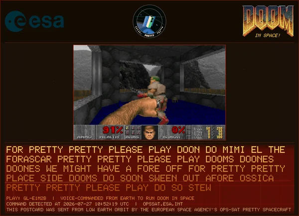
Postcard from low Earth orbit · 27 July 2026Generated onboard OPS-SAT PRETTY
Abstract
On 27 July 2026 a spoken command transmitted from an amateur-radio club station in Oslo was received, transcribed and executed aboard the OPS-SAT PRETTY spacecraft, which ran the game DOOM in response and downlinked images of it doing so. This report documents the LA4O ground segment and analysis contribution to that result.
The uplink was narrowband FM at 1296.000 MHz, approximately 80 W indicated into a 15.1 dBi right-hand circularly polarised helix, manually pointed. An initial attempt on 3 July produced only noise aboard the spacecraft. Analysis of the returned in-phase and quadrature captures identified the cause as a bandwidth mismatch: approximately 170 kHz was being presented to the FM discriminator for a signal occupying about ±5 kHz, placing the demodulator below its threshold. A three-stage correction — peak search within ±100 kHz, frequency shift to baseband, and low-pass filtering with decimation before demodulation — was proposed, reproduced independently in two implementations, and integrated into the flight software, together with the removal of a redundant filtering stage found during that work.
Because the onboard recogniser is a small quantised English transducer model, command audio was optimised against it directly. Twenty-nine synthetic voices were screened through a simulated FM channel; four remained detectable at approximately 12 dB carrier-to-noise ratio and one at 9 dB. These were combined into a repeated-command keyer in two cadences.
Three of six onboard captures detected the command and launched DOOM. Analysis of the downlinked experiment package shows that no exact command token was recognised in the highest-scoring capture — detection depended entirely on lexical repetition and a one-character fuzzy matcher — and that within that pass the captures separated cleanly by recovered speech contrast, at a boundary close to the laboratory screening criterion adopted three weeks earlier — a correspondence which the evening pass then showed does not generalise. Of the three unsuccessful captures, two are attributable to loss of the uplink at the ground station near culmination and one to recognition margin alone; none to the flight signal processing. No transmit Doppler correction was applied from the ground, a 34 kHz excursion being tracked onboard as a by-product of the narrowing stage.
A second pass the same evening substituted a live human voice for the synthetic keyer. Although the spacecraft’s attitude control was not enabled and the scheduled target pointing was therefore never executed, one capture detected the command and launched DOOM — and did so on two exact recognitions of the command word, the only exact command tokens produced in either pass. That result runs counter to the design reasoning, which had treated natural speech as the harder case, and is reported here as a strong hypothesis rather than a controlled measurement.
Keywords: voice commanding · spacecraft operations · amateur radio · 23 cm band · narrowband FM · software-defined radio · frequency estimation · speech recognition · OPS-SAT · CubeSat · in-orbit demonstration
Scope and conventions
Version. This is version 1.1, issued 1 August 2026. The revision history is at the end of the document, in Appendix F.
Naming. Throughout this report the group is referred to by its call sign LA4O rather than by its full name, Oslogruppen av NRRL. This is both shorter and the form radio amateurs actually use: a call sign identifies a station unambiguously and internationally, and it is the identifier that was transmitted on air and recovered from the spacecraft’s transcripts. Individual members are likewise identified by call sign, with given names where they help the reader.
The report separates direct measurements from estimates. “Indicated” RF values refer to the field power meter and include its unresolved calibration error. Times are UTC unless explicitly marked CEST.
Authorship and method of preparation
This report is written from LA4O’s perspective and makes no claim to speak for the wider experiment team. Because that perspective shapes what is recorded and what is not, it is worth stating plainly who wrote it and how.
Authorship
The report was written principally by LB6AJ, who also carried out the amplifier procurement and integration, the I/Q and DSP analysis, the speech-model and voice screening, and the keyer preparation described in Chapters 4 to 6. The record of the 27 July passes — the operational log, the timings, the station configuration and the photographic documentation of both the morning and evening attempts — is LB9BJ’s. The draft was proof-read by LB9BJ on 29 July; both are accountable for its accuracy.
Sources
The material underlying this report is primary: the project email threads between LA4O, Ólafur Waage, ESA and Tanagra Space; the operators’ own logs and photographs; the audio and I/Q returned from the spacecraft; and the complete experiment package pack-4023 downlinked after the successful pass. Where a statement rests on interpretation rather than measurement, the text says so; where evidence is absent, the text says that instead of filling the gap.
Use of language models
Large language models were used in preparing this document, and the group sees no reason to be coy about it. The work they performed was drafting and structuring the narrative from those primary sources, writing the analysis scripts used to produce several of the figures and measurements, and generating the HTML edition including its interactive elements.
The choice was practical as much as it was editorial. Almost the whole of this campaign fell across the Norwegian summer holidays, and LB6AJ — who carried most of the analysis on the radio amateur side and most of the writing — spent it travelling: through Sweden and Finland in mid-July, then north of the Arctic Circle in Norway for the final passes, supporting the 27 July morning attempt remotely from Steigen and, during the evening attempt, watching the sky in the general direction of the satellite and enjoying the landscape from near 68° north. Connectivity, as it happened, was not the constraint: work continued over a commercial low-Earth-orbit broadband constellation of some ten thousand satellites, which held up well across northern Norway. What was scarce was laptop time, measured in short sessions between other things. A document of this length, with this much source material to reconcile, would not have been written at all under those conditions by conventional means. What the tools bought was not polish but feasibility.
There is a small irony worth recording. Much of the analysis and writing described here was carried out through a constellation of roughly ten thousand commercial satellites, in order to document an experiment in commanding a single experimental one by voice. The routine and the novel in satellite communications now sit very close together.
Anthropic’s Fable model was used initially. The contemporaneous record is candid about it: circulating an early version of the project log on 11 July 2026, LB6AJ wrote, “Yes, I am cutting corners, using Anthropic’s Fable model to write the log for me.” When Fable was withdrawn from the included models later in July, work continued with Opus.
What this does and does not mean. Every technical claim in this report traces to a primary source held by the group, and every figure derived from measurement was generated from the actual data files rather than described from memory. The language models did not supply facts about the experiment; they organised, drafted and rendered facts that already existed in the record, and produced the analysis code that extracted several of them. The judgement about what is true, what is inferred and what remains unknown is the authors’.
It should not be inferred from any of this that the document assembled itself. It took many hours of work over several weeks, and the tools were as capable of being confidently wrong as they were of being useful. Figures were rebuilt more than once when a measurement turned out to describe the wrong thing; cross-references drifted as sections moved and had to be audited mechanically; attributions, dates and instrument settings were checked against the original emails, photographs and log files one at a time; and several passages that read plausibly were removed on discovering that the evidence did not actually support them. The analysis of the two keyer files in Section 6.7 went through three versions before the method was sound enough to trust. Getting a document of this length to a state where the authors are willing to put their call signs on it is slow work whatever is helping, and the assistance changed how the hours were spent rather than how many of them there were.
The honest assessment is that without these tools the documentation would have been substantially less complete and would not have been interactive at all. A volunteer club project does not normally produce a figure-referenced technical report with per-capture telemetry analysis, embedded audio and a full photographic archive; it produces a project log and some photographs. That difference is worth acknowledging openly rather than leaving readers to infer it.
Speech became a spacecraft command
On 27 July 2026, an amateur-radio transmission from LA4O’s rooftop station in Oslo was received, transcribed and acted upon aboard the PRETTY spacecraft. Three of six onboard captures detected the trigger word and launched DOOM. LA4O—the Oslo Group of the Norwegian Radio Relay League—participated as one ground-station group in a wider experiment coordinated across Ólafur Waage, ESA, Tanagra Space, Graz University of Technology and the participating radio amateurs. This report documents LA4O’s piece of that larger engineering effort; it does not claim that the Oslo group conceived, led or delivered the mission as a whole.
The achievement was not a simple consequence of transmitting more power. A low-elevation test on 3 July proved that PRETTY could hear LA4O, but the original spacecraft receive chain demodulated a channel of roughly 170 kHz even though the narrowband FM signal occupied only a small fraction of that bandwidth. Noise therefore dominated the discriminator input. LA4O’s offline analysis recovered intelligible speech by estimating the carrier offset, shifting the signal to baseband, narrowing the channel and decimating before FM demodulation. Tanagra Space reproduced the method independently, implemented it in C++ GNU Radio, removed a redundant audio-filtering stage, and tested the revised ARM flight binary.
Ground-side work proceeded in parallel. The team assembled an Icom IC-9700, a PE1RKI XRF286S LDMOS amplifier, a 28 V supply, a manual bias controller, a Komunica SX-1000 power meter and a 15.1 dBi RHCP Wimo Helix23-2 antenna. Speech testing screened 29 synthetic voices against the actual Sherpa model and then re-screened them through a simulated FM channel: at approximately 12 dB carrier-to-noise ratio only four survived, and at 9 dB only one. Those four were stitched into the operational keyer with a repeated command ending, in two cadence variants. Encoding problems discovered shortly before the final pass were resolved remotely, allowing both files to play from the IC-9700.
The morning station transmitted continuously through the pass at approximately 5.5 A drain current and 80 W indicated output. Tanagra Space subsequently reported: “Holy moly, it WORKED!” Captures 1, 4 and 5 detected the command and ran DOOM. Analysis of the downlinked experiment package establishes why: the flight narrowing stage functioned correctly on all six captures and recovered intelligible speech from every capture that contained a signal, while two of the three failures were caused by loss of the uplink at the ground station around maximum elevation and the third by recognition margin alone. Notably, no exact DOOM token was recognised in the successful flagship capture—detection depended entirely on the repeated ending and the one-character fuzzy matcher. The campaign shows that amateur infrastructure can support technically meaningful spacecraft experiments when RF design, signal processing, flight software and disciplined operations are treated as one system.
A second pass at 23:37 CEST the same evening replaced the keyer with an operator speaking live into the microphone. The spacecraft’s attitude control had not been switched on, so the scheduled target pointing was never executed; by good fortune its position was nevertheless right for part of the broadcast, and one capture detected the command and ran DOOM, recognising the command word exactly twice. Every detection of the morning pass had depended on approximate matching. The human voice, on the worse pass, produced the only clean recognitions of the campaign.
LA4O within the project
The Oslo Group of the Norwegian Radio Relay League participated in the PRETTY DOOM activity as a club project. Its members supplied one amateur ground segment, practical RF engineering, operators and signal-processing analysis to a much larger collaborative experiment.
Oslogruppen av NRRL
NRRL — Norsk Radio Relæ Liga, the Norwegian Radio Relay League — is the national association for radio amateurs in Norway, founded in 1928. Oslogruppen av NRRL is its local group for Oslo, and predates the national body: founded in 1923, the group has its premises at Rommen and uses the club call sign LA4O (la4o.no). Its official presentation describes a modern member-operated radio station, technical lectures and meetings, training, QSL services, communications assignments and emergency-communications participation, together with an active technical and social community. This existing club environment made it possible to treat PRETTY as a shared group activity: equipment, station access, specialist knowledge and pass staffing could be assembled across several members rather than assigned to a single individual.
Within the overall PRETTY experiment, LA4O was one piece of the puzzle. The spacecraft, its operations, the experimental framework, flight software, coordination and other participating stations belonged to a broader team. LA4O’s report is intentionally written from the Oslo group’s viewpoint and gives detailed treatment to the work for which its members had direct evidence.
Project contact and collaborating team
| Participant | Affiliation / call sign | Documented contribution |
|---|---|---|
| Ólafur Waage | Project contact and coordinator Running the DOOM experiment | Originated the approach to Norwegian radio amateurs and invited the Oslo group; coordinated between LA4O, Tanagra Space and the ESA and TU Graz side; relayed experiment requirements, schedules and results throughout. |
| Georges Labrèche | Tanagra Space Running the DOOM experiment | Built and operated the onboard experiment. Reproduced the DSP narrowing result independently, implemented and tested the flight-compatible processing changes, found and removed the redundant filtering stage, screened the candidate voices through the flight binary, and reported the successful onboard activation on both passes. |
| Vladimir Zelenevskiy | ESA project correspondence | Communicated spacecraft-side readiness, scheduling and nominal status around the final passes. |
| ESA / ESOC experiment team | European Space Agency | Coordinated experimentation, scheduled spacecraft activity and supported the flight-side campaign. |
| Spacecraft operations team | Graz University of Technology | Operated OPS-SAT PRETTY and supported the in-orbit experimental platform. |
| LA4O | Oslogruppen av NRRL | Radio amateur club in Oslo, Norway, and the ground segment described in this report. The club board considered the invitation and gave its approval for the group to take part, making the station, the premises and the roof available for the campaign. |
| LB6AJ Eskil Hadland | Oslogruppen | Ordered the antenna and the power amplifier and integrated the amplifier assembly; bias-control concept; took part in the 3 July rooftop transmissions; I/Q and DSP analysis and the channel-narrowing proposal; speech-model and voice screening; keyer preparation; operating instructions; remote support from Steigen, Norway during both 27 July passes. Principal author of this report. |
| LB9BJ Jon Bergli Heier | Oslogruppen | Pass predictions and Look4Sat tracking; recorded the operator voice keyer used on 3 July and operated the station during those passes; took over the technical thread when LB6AJ went travelling in July; final-pass operation and the ground report to collaborators; transmitting operator for the live-microphone evening pass of 27 July; author of the photographic and operational record of both 27 July passes. |
| LB5SK Magne Helander | Oslogruppen | Provided the IC-9700; planning; ground-station setup and operation on both the 3 July and 27 July passes; established that the transceiver would play a voice-keyer file from its SD card, and operated the station and keyer during the final campaign. |
| LA7WRA Peter Petrov | Oslogruppen | Early spacecraft research, antenna and link planning, the azimuth and elevation plan; ground-station setup and operation; supplied the antenna tripod used for the mast; 3 July field operation. |
| LA7IJ Truls Johansen | Oslogruppen | Ground-station preparation and operation on both the 3 July and 27 July passes; RF power-meter procurement; documented the transmissions with audio and video recording as well as photography. |
| LB0PI Jan Olav Aasterud | Oslogruppen | Discussions and planning; ground-station setup; participated in the 3 July rooftop campaign and in the evening pass of 27 July. |
| LA4CIA Lewi | Oslogruppen | Joined the project group and technical coordination from 17 June. |
| LB2KK Per Thomas Jahr | Oslogruppen | Added to the project group on 4 June and party to the technical coordination thread throughout the campaign. |
Roles above are limited to activities explicitly present in the supplied project log and correspondence. They are not intended as a complete credit list for the spacecraft mission or the wider DOOM experiment. Names not fully stated in the source are retained in the form used by the group record.
Contents
List of figures
List of tables
Acronyms and conventions
- ADC
- Analogue-to-digital converter
- AGC
- Automatic gain control
- AOS
- Acquisition of signal
- AWGN
- Additive white Gaussian noise
- CNR
- Carrier-to-noise ratio
- dBFS
- Decibels relative to digital full scale
- DSP
- Digital signal processing
- ECEF
- Earth-centred, Earth-fixed coordinate frame
- EIRP
- Equivalent isotropically radiated power
- ESA
- European Space Agency
- ESOC
- European Space Operations Centre
- FIR
- Finite impulse response (filter)
- FM / NFM
- Frequency modulation / narrowband FM
- I/Q
- In-phase and quadrature samples
- LDMOS
- Laterally diffused metal-oxide semiconductor
- LO
- Local oscillator
- LOS
- Loss of signal
- MSPS / kSPS
- Mega- / kilo-samples per second
- PA
- Power amplifier
- PSD
- Power spectral density
- PTT
- Push to talk
- RHCP
- Right-hand circular polarisation
- RMS
- Root mean square
- SDR
- Software-defined radio
- SEPP
- Satellite Experimental Processing Platform
- STT
- Speech to text
- TMTC
- Telemetry and telecommand
- TTS
- Text to speech
- UHF
- Ultra high frequency; also the UHF-series (PL/SO-239) connector family
- WGS-84
- World Geodetic System 1984
Introduction
Voice commanding is interesting precisely because it is an intentionally imperfect control interface. Unlike a framed digital command, spoken audio varies by speaker, pacing, pronunciation, RF channel quality and receiver processing. Demonstrating that such a signal can cause a deterministic onboard action therefore tests the entire communications chain.
1.1 Motivation
Amateur radio offers accessible equipment, licensed operators and a geographically distributed community, but the PRETTY experiment demanded more than a routine contact. The uplink had to deliver intelligible NFM speech at 1296 MHz during a brief pass, with sufficient link margin and timing overlap to enter short onboard capture windows. The spacecraft then had to isolate the wanted channel, demodulate it, recognise a trigger phrase and launch an application.
1.2 Objectives
The primary objective was successful onboard execution of DOOM following a spoken command transmitted by LA4O. Supporting objectives were to build a repeatable 23 cm uplink station, diagnose the failure modes seen in early spacecraft audio, validate improvements against flight recordings, and leave procedures that could be reused by future experiment teams.
The word voice carries the whole criterion. A framed digital command meeting the same functional description would demonstrate nothing new; what is being tested is whether spoken audio — variable in speaker, pacing and pronunciation, and degraded by an FM channel at low carrier-to-noise ratio — can be made to survive that path reliably enough to cause a deterministic onboard action.
1.3 Origin of the project
The experiment reached LA4O through the club’s public website. At 23:34 on 29 May 2026 the contact form at la4o.no — the same form used for QSL queries and membership enquiries — received a message from Ólafur Waage, a software developer from Iceland based in Norway who had been working with the European Space Agency on the OPS-SAT programme. It was forwarded to the board the following evening by the club secretary, LB7SJ Nina Skramstad, with the observation that it was an interesting request and that perhaps someone would like to take up the opportunity.
The message set out the premise concisely. The team had already run DOOM aboard OPS-SAT-1 — first at the end of 2023, and by 2024 with the spacecraft’s own photographs of the Earth appearing in the game. OPS-SAT PRETTY differed in one decisive respect: it carried radio equipment, and could therefore listen. That single capability turned a novelty into an experiment, and the proposal followed directly from it — that radio amateurs might transmit a spoken message to the spacecraft, and that the spacecraft might act on it.
“It would be very fun if Norwegian radio amateurs were the first to call up to a satellite and tell it to play DOOM.”Ólafur Waage — enquiry via the LA4O contact form, 29 May 2026, 23:34 CEST
LA4O replied a little after midnight on 1 June, noting that the club already had members active on satellites at S-band and below and that the equipment side should therefore be manageable. A board meeting was scheduled for the following evening, and Ólafur was invited to join it by video call. He had asked for ten to twenty minutes. The board agreed to participate, and the answer to his question took the next eight weeks to produce.
1.4 Method and evidence
The work combined link-budget reasoning, hardware integration, field tests, I/Q analysis, software comparison, flight-binary testing and coordinated passes. Evidence in this report comes from operator logs, photographs, direct instrument readings, spacecraft audio and I/Q, implementation correspondence, ESA and Tanagra Space reports, and downlinked artifacts.
Mission background
2.1 From PRETTY to OPS-SAT PRETTY
PRETTY—an acronym for Passive REfleTometry and DosimeTrY—was designed, developed and operated by an Austrian consortium comprising Beyond Gravity Austria, Graz University of Technology and Seibersdorf Laboratories under an ESA General Support Technology Programme contract. Its original mission combined passive reflectometry for observing ice and sea level with radiation measurements from an onboard dosimeter. Following successful completion of that mission in October 2024, the spacecraft joined the OPS-SAT initiative and was incorporated into the OPS-SAT Space Lab in 2025 as OPS-SAT PRETTY.
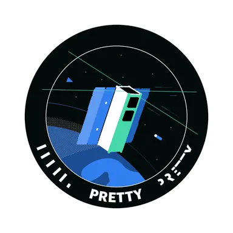
This transition is central to the DOOM experiment. Rather than ending spacecraft use after completion of the original mission, the OPS-SAT model makes the remaining flight platform available for public, research and industrial in-orbit experimentation. ESA states that 50% of the mission is dedicated to OPS-SAT experiments. Graz University of Technology operates the spacecraft, while experimentation is coordinated by ESA’s European Space Operations Centre (ESOC) in Darmstadt.
| Characteristic | Official specification | Relevance to this experiment |
|---|---|---|
| Spacecraft class | 3U CubeSat, 10 × 10 × 34 cm; 4.6 kg | Compact flight platform supporting reconfigurable experiments. |
| Orbit | Approximately 520 km sun-synchronous orbit (June 2025) | Produces short, predictable ground-station access windows. |
| Processing payload | Satellite Experimental Processing Platform (SEPP) with a reconfigurable system-on-chip | Hosts custom onboard experiment software. |
| Radio payload | Software-defined radio directly connected to SEPP | Enables programmable capture and receive processing. |
| Platform communication | VHF and S-band TMTC | Supports spacecraft operations and experiment-data return. |
| Attitude determination | Magnetometers, Sun sensors, gyroscope and GNSS | Provides knowledge of spacecraft orientation and orbit state. |
| Attitude control | Magnetorquers and reaction wheels | Provides active spacecraft pointing and stabilisation. |
| Power | Deployable solar wings and body panels; maximum 30 W generation; battery | Constrains the scheduling and execution of onboard experiments. |
Platform data in Table 2 are taken from ESA’s official OPS-SAT PRETTY mission page. The listed VHF and S-band TMTC system describes the spacecraft platform; the 1296 MHz amateur experimental uplink documented in this report is the separately configured DOOM experiment path.
2.2 Reconfigurable payload architecture
At the centre of OPS-SAT PRETTY’s payload is SEPP, a highly reconfigurable system-on-chip platform coupled directly to the SDR. The spacecraft also carries a capable GNSS receiver supporting GPS and Galileo reception and a two-patch GNSS antenna originally used for reflectometry measurements. ESA describes the spacecraft as able to provide functions similar to OPS-SAT-1, with equivalent or improved power, processing, SDR, GNSS and attitude-control subsystems. Unlike OPS-SAT-1, OPS-SAT PRETTY has no onboard camera.
The tight SEPP–SDR coupling explains why the spacecraft was an appropriate host for experimental voice commanding. Radio-frequency samples could be processed by custom software on a reconfigurable flight computer, allowing the team to change frequency estimation, channel filtering, decimation, FM demodulation and speech-recognition stages during the campaign. The DOOM activation was therefore not a conventional spacecraft telecommand through the operational TMTC link; it was an in-orbit software experiment deliberately built around received amateur voice.
2.3 The 2023 precedent, and what changed
DOOM had already flown, and by the same two people who appear throughout this report. Ólafur Waage and Georges Labrèche ran the game aboard OPS-SAT-1, the archived record giving 28 December 2023 for the first run in orbit and 23 March 2024 for the version in which images acquired by the spacecraft’s own camera became the backdrop of the gameplay environment. The work is public, at github.com/olafurw/opssat-doom.
How it ran matters here, because the same constraint shaped the PRETTY experiment. OPS-SAT-1 has no graphics output and no practical way to be played interactively from the ground, so the spacecraft did not run DOOM as a game in the ordinary sense: it played back a recorded demo and periodically captured screenshots of the gameplay, which were downlinked as the evidence. PRETTY inherits the method exactly — the flight configuration of 27 July cycles through seven .lmp demo files and captures frame ranges from them — which is why the artifacts in Chapter 9 are demo frames and level statistics rather than a record of anyone playing.
That earlier demonstration established the essential point: a general-purpose game engine could run to completion on a flight processor and return visual evidence. What it could not establish is anything about commanding, because the trigger was internal. The spacecraft was acting on its own schedule.
The distinguishing feature of OPS-SAT PRETTY is that it carries a software-defined radio and can therefore receive. That single difference is what converts the earlier demonstration into an experiment with an external control loop: the trigger condition moves from an onboard event to a signal originating on the ground, transmitted by an operator who has no other access to the spacecraft. Everything in this report — the link budget, the DSP, the voice screening, the pointing — exists to make that one substitution work reliably.
2.4 Why DOOM: an established engineering sport
The choice of DOOM as the payload action is not arbitrary, and it is not only a joke. Since id Software released the game’s source code in 1997, porting DOOM to unlikely hardware has become a recognised and long-running exercise in the computing community, catalogued under the question “Can it run Doom?”. One community description calls it computer science’s most violent equivalent of a “Hello, world” program, and that captures its function precisely: it is a demanding but well-understood workload whose successful execution is unambiguous and instantly legible to a non-specialist.
The catalogue of platforms is long and increasingly improbable — cash machines, digital cameras, graphing calculators, oscilloscopes, printers, thermostats, pianos, and a great many devices whose designers never contemplated running a game at all. Satellites now appear on that list. The exercise persists because DOOM occupies a useful engineering position: the source is public, the requirements are modest by any modern standard, and yet it is a complete real-time engine with rendering, input handling, timing and game state. Making it run is a genuine port, not a demonstration of a single instruction.
For an experiment of this kind that combination is unusually convenient. A successful command produces a running application, a frame buffer that can be composited into an image, and demo statistics that record whether the level actually played to completion — evidence that is self-validating and needs no interpretation. The alternative, toggling a flag and reporting it in telemetry, would prove the same thing far less legibly.
The activity is archived publicly. The OPS-SAT DOOM work is catalogued in the canitrundoom.org registry as entry 1042, “Doom on a satellite (OPS-SAT)”, dated 27 August 2024 and credited to Ólafur Waage and Georges Labrèche, tagged #satellite, #baremetal, #chocolate doom, #doomgeneric and #demo. The registry records the same constraint described above — no graphics card, live control impractical, so the satellite ran a demo and returned periodic screenshots — and notes that the first level was completed. The Doom Wiki maintains the broader history of the phenomenon.
2.5 A Norwegian footnote
There is a certain symmetry in a Norwegian amateur-radio club being the group to send DOOM a command from Oslo, because DOOM arrived in Norway to a distinctly unfriendly reception. On 9 March 1994 the Kristiansand newspaper Fedrelandsvennen ran the front-page headline “Perverst dataspill sjokkerer” — perverted computer game shocks — over a report that the game was circulating among young people in Kvinesdal. The opening described it as a game featuring corpses, monsters from hell, and the player cast as a bloodthirsty killer, and a follow-up piece warned how easily copies could be obtained. One section was headed simply “Grusomt og sykt”: gruesome and sick.
The reporting drew on a British games magazine, embellished the game’s content along the way, and repeated a claim about infant corpses that was an urban legend with no basis in the game. It had practical consequences: TV 2 withdrew game advertising from its teletext service after being approached by the newspaper, and there were calls for computer games to be subject to the same pre-screening as video releases. NRK’s games programme NERD revisited the episode a decade later as a study in how the press once wrote about the medium.
Thirty-two years after being denounced as a corrupting influence on Norwegian youth, DOOM was executed aboard a spacecraft in response to a spoken command from a Norwegian club station, and the resulting screenshots were distributed as evidence of a successful engineering demonstration. The pixellated demons that caused the alarm in 1994 are the same sprites visible in Figure 29. That is not an engineering finding, but it is a pleasing one, and it belongs in the record.
2.6 Voice as a spacecraft interface
What separates this experiment from the 2023 demonstration is not DOOM but the interface. Speaking a command aloud and having a remote machine act on it is, in 2026, an entirely ordinary experience on the ground: voice assistants such as Amazon Alexa and Google Assistant answer to spoken wake words in millions of homes, and the same interaction pattern controls lighting and heating, dictates and sends text messages, and sets destinations in car navigation systems. The wake word followed by a command — the exact grammar PRETTY implements with PRETTY and DOOM — is now a convention most people use without thinking about it.
Applying that convention to a spacecraft is where it stops being ordinary. A domestic assistant enjoys a quiet room, a microphone a metre away, a broadband network connection and effectively unlimited compute in a data centre. The equivalent chain here ran a small quantised acoustic model on a flight processor, at the end of a 520 km narrowband FM radio link operated by volunteers with no way to retry, against a spacecraft visible for a few minutes at a time, and with no direct confirmation of success or failure. Every simplification a consumer voice assistant relies upon was unavailable.
That is the real content of the demonstration. The interface is familiar; the operating conditions are not. Showing that a recognisable, everyday interaction model survives that channel is a more interesting result than the game at the end of it, and it is why the experiment generalises beyond DOOM to any onboard action a spacecraft might reasonably be asked to take.
2.7 Public and press interest
DOOM in orbit has attracted attention well outside the amateur-radio and space-operations communities, and the trajectory of that coverage is itself informative. The earlier OPS-SAT-1 demonstration was reported by Futurism in October 2025 under the headline “Hacker Gets ‘Doom’ Running on Satellite in Outer Space”, describing how the spacecraft’s camera was repurposed to capture gameplay frames and reduce them to the game’s 1993 palette, and by ZDNet under “How a programmer got Doom to run on a space satellite — and what happened next”. Ólafur Waage’s stated motivation in that coverage is worth repeating here, because it applies equally to the present experiment:
“The point was to break the curse of being too risk-averse with multi-million-dollar spacecraft.”Ólafur Waage, quoted in Futurism, 31 October 2025
By March 2026 the subject had reached the scientific press. Nature published “How the classic computer game Doom became a tool for science” by Rachel Fieldhouse, with the standfirst “The 1990s game has been run on a satellite and played by neurons in a dish” — treating the game not as a curiosity but as a recurring instrument in serious research, from artificial-intelligence benchmarking to studies of cognition. A demonstration that began as an engineering joke had become a recognised experimental vehicle.
That progression matters for how this report should be read. The DOOM framing is what makes the experiment legible to a general audience and what attracted the coverage; the engineering underneath it — a voice-controlled command path to a spacecraft, closed by volunteers using accessible equipment — is what makes it worth documenting at this length.
Three accounts of the 27 July demonstration were published at the end of July 2026, one from each side of the collaboration:
- Georges Labrèche, Tanagra Space, OPS-SAT PRETTY DOOMed — tanagraspace.com/opssat-pretty-doomed, published 31 July 2026. The flight-software account of the experiment.
- Georges Labrèche, First voice command of a satellite — georges.fyi/opssat/first-voice-command-of-a-satellite. A personal write-up of the same work.
- LA4O, Oslogruppen utfører verdens første stemmestyring av en satellitt — la4o.no. The group’s own announcement, in Norwegian.
2.8 PRETTY and the DOOM experiment
For this experiment OPS-SAT PRETTY operated an onboard receive-and-recognition chain able to record amateur FM voice, demodulate the signal, transcribe speech and use a recognised word as an application trigger. DOOM was selected as a visible, unambiguous payload action: a successful command could be corroborated by a transcript postcard and gameplay frames rather than inferred from ground telemetry alone.
2.9 Collaboration model
Ólafur Waage coordinated between LA4O, Tanagra Space and Georges Labrèche, and the ESA and TU Graz team. LA4O provided the ground transmitter and substantial signal-analysis input. Georges Labrèche of Tanagra Space reproduced the proposed narrowing method, integrated the changes into the spacecraft pipeline and ran the command candidates through the flight executable. ESA scheduled experiment windows and reported spacecraft status. This rapid feedback loop allowed each pass to serve as an engineering experiment rather than a binary success-or-failure event.
2.10 Capture behaviour
Onboard capture is short and intermittent, which drives the whole design of the transmitted message. On 3 July ESA’s capture pipeline took six two-second snapshots across the two passes, at 19:24:33, 19:25:11 and 19:25:31 on the first and 20:57:27, 20:58:05 and 20:58:25 on the second — six seconds of recorded signal spread across roughly four minutes of transmission. Continuous or nearly continuous transmission was therefore preferred. Repetition with short pauses increased the probability that at least one complete command would fall inside a capture, while pauses helped the recogniser segment words.
System overview
The experiment was engineered as one chain. Transmit power could not compensate for an overly wide discriminator channel; a good DSP chain could not recover a command that missed the capture window; and a clean RF signal could still fail if the WAV encoding was incompatible with the radio.
voice
NFM
≈80 W indicated
RHCP helix
receiver
gameplay downlink
application
trigger
decimate / FM
capture
| Function | Element | Operating point |
|---|---|---|
| Audio source | Two pre-tested TTS WAV files on IC-9700 SD card | 16-bit signed little-endian PCM, mono, 16 kHz |
| Exciter | Icom IC-9700 | 1296.000 MHz, NFM/FIL3, 35% RF setting |
| Power amplifier | PE1RKI XRF286S LDMOS | 28 V, ≈5.5 A, ≈80 W indicated |
| Antenna | Wimo Helix23-2 | RHCP, 15.1 dBi, ≈30° beamwidth |
| Pointing | Manual azimuth; fixed elevation | Look4Sat prediction and roof marks |
Ground station design
4.1 Radio and drive selection
The Icom IC-9700 was the preferred driver because its RF output could be continuously adjusted and it could play a compatible voice-keyer file directly from SD storage. A 35% RF setting drove the PA to the final indicated output. The club’s Icom ID-1 remained a fallback, but its fixed 1 W or 10 W settings require the 10 W output to pass through 1 dB and 3 dB, 25 W attenuators to obtain roughly 4 W drive. Its lack of file-based audio made it less suitable for repeated, controlled commands.
4.2 Power amplifier
4.2.1 Selecting a source of RF power
The club station could reach 10 W at 1296 MHz with the Icom ID-1, and the early link reasoning of 3 June indicated that this was unlikely to be sufficient. The question was therefore how to obtain a useful step up in power on a timescale of days rather than months, and the search that followed was governed by constraints that are worth stating explicitly, because they are not the constraints a laboratory would apply.
Commercial 23 cm amplifiers exist, but the accessible market divides roughly into inexpensive imported modules of uncertain provenance, surplus commercial or telecommunications hardware requiring conversion, self-build from an LDMOS device and a published design, and purpose-built amateur amplifiers from specialist constructors. Each was considered against three criteria, and the ranking of those criteria mattered more than the criteria themselves. Price and availability were decisive; ease of use was explicitly secondary. The project had a fixed and externally imposed schedule — the passes were granted by ESA and could not be moved — so an amplifier that was cheap and elegant but would arrive in six weeks was worth less than one that was adequate and could be shipped immediately. Equally, the group was willing to accept an amplifier that demanded careful manual operation, since the operators were licensed and experienced and could be briefed on a procedure, whereas no amount of operator skill can compensate for hardware that has not arrived.
Self-build was rejected on schedule grounds: at 23 cm the layout, matching and thermal design are unforgiving, and a first attempt would have consumed the whole month. Surplus conversion carried the same risk with the added uncertainty of unknown device history. Unbranded modules were cheap and available but offered no reliable specification, no builder support and no bench-test record — an unattractive combination when the amplifier would be operated at close to its limit by several different people on a roof.
4.2.2 The PE1RKI 75 W amplifier
The amplifier eventually purchased was found on the website of Bert Modderman, PE1RKI, in the Netherlands, who designs and builds amateur power amplifiers for the VHF, UHF and microwave bands and sells them directly. LB6AJ ordered the 75 W 23 cm XRF286S unit on 4 June for approximately €155 including shipping; it cleared customs and was available to the group by 15 June. What the purchase bought, beyond the hardware itself, was a specification the team could design around and a constructor who bench-tests each unit before it ships — which is precisely why the operating limits quoted below could be treated as trustworthy rather than nominal, and why the group was willing to run the device near P1dB on the final pass.
The single-stage amplifier uses an XRF286S LDMOS device and provides approximately 15 dB gain. Builder data identify 5.65 A at 28 V for about 75 W at P1dB, with 4–5 W input. Operation above approximately 80 W or 5.8 A was avoided. The 28 V drain supply and separate bias enable are safety-critical: transmitting without gate bias can damage the device.
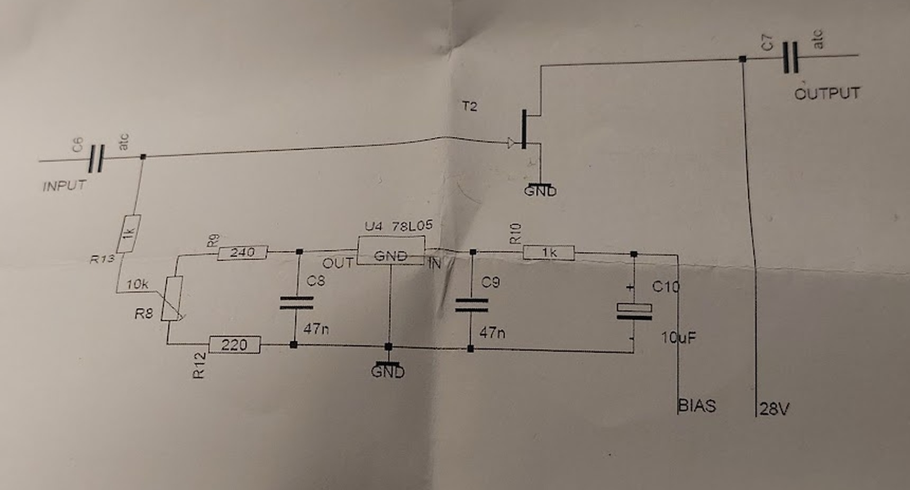
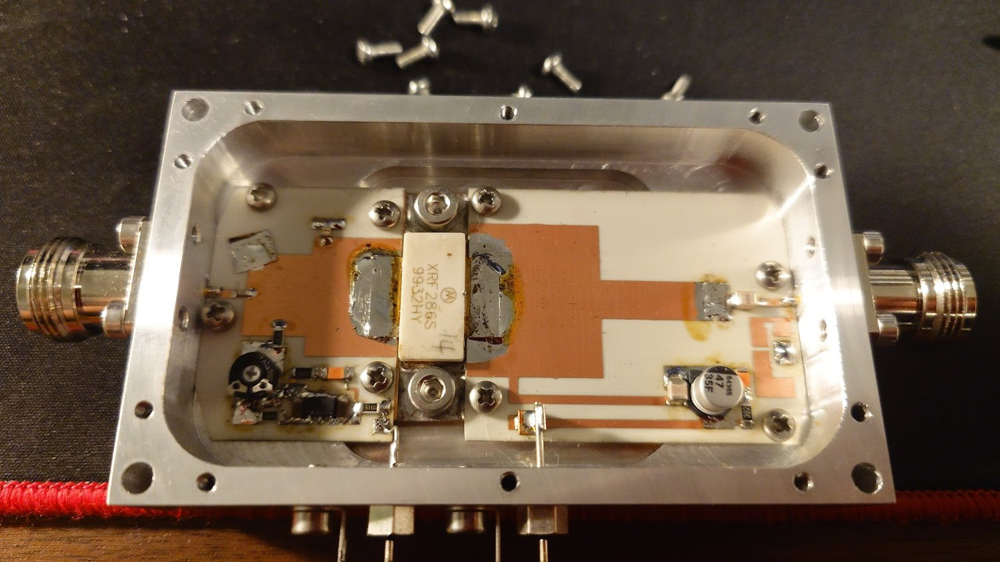
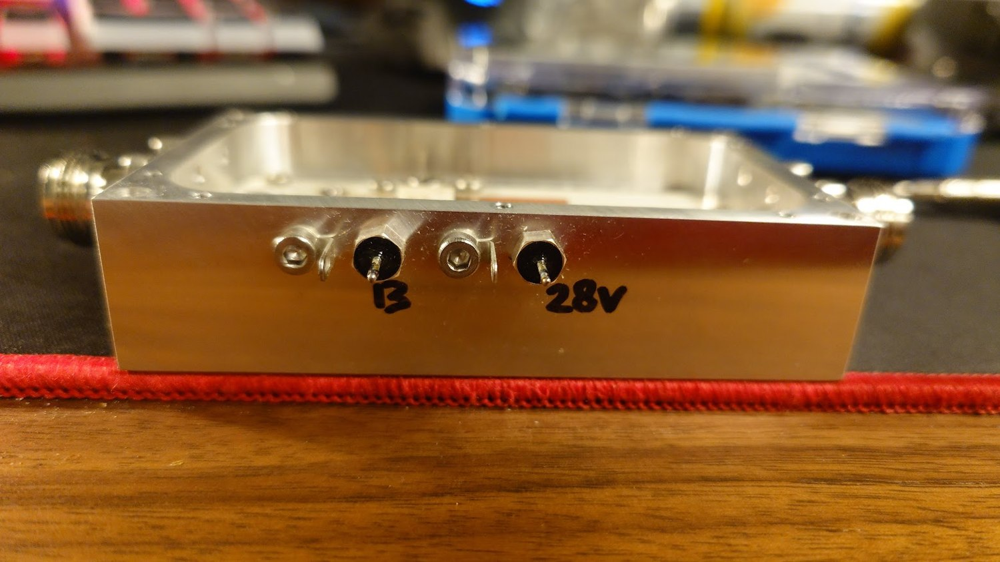
4.3 Bias, protection and cooling
An Arduino Nano latches a deliberately simple manual bias state. The red ARM button energises the relay that applies 12 V to the PA BIAS input and illuminates a red status LED; the black OFF button removes both. The operator arms before PTT and disarms only after unkeying. Two 10 A fuses protect the 28 V feed and two 3 A fuses protect the fan/bias side. WAGO lever connectors provide 12 V and common-ground distribution.
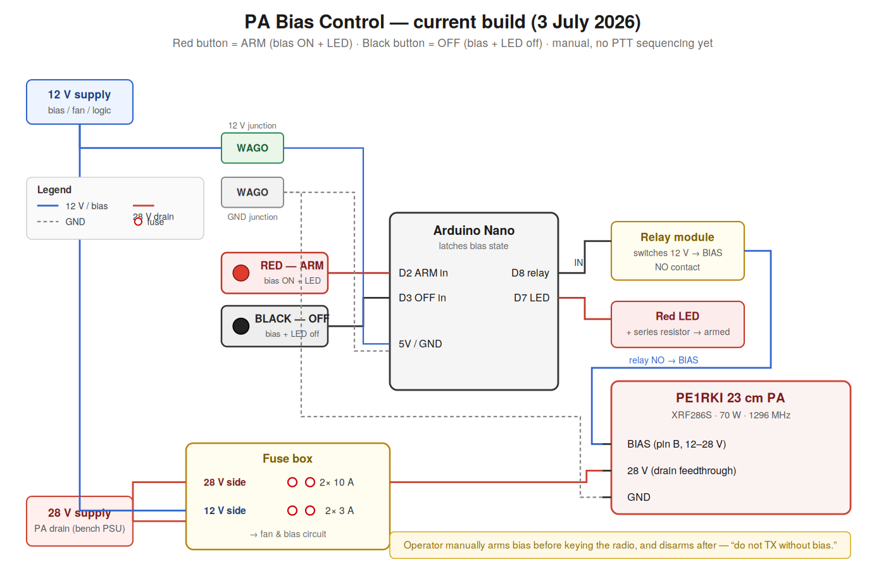
A large CPU tower cooler was clamped to the machined enclosure with jubilee clips. Although mechanically provisional, it was thermally adequate: the amplifier remained cool on 3 July and only slightly warm during sustained operation on 27 July — a result to be read with the qualification that it sat in direct sunshine for the whole pass.
4.4 Mechanical integration: the amplifier board
The amplifier assembly that flew every LA4O transmission after 3 July is shown in Figures 7 and 8. It does not look like flight-adjacent hardware, and the report would be dishonest if it presented it as anything other than what it is: a set of loose components screwed and strapped to an old wooden shelf board, wired in unbundled cable, with the signal and supply designations written directly onto the wood in blue marker pen.
The circumstances explain the appearance. Up to 3 July the amplifier, its fuse distribution, the bias controller, the relay board and the cooler were separate items connected by flying leads. The first pass that day was flown barefoot, and while the crew prepared for the second the practical problem became obvious: the assembly had to be carried up onto the roof, and moving five loosely connected sub-assemblies by hand across a building was very likely to pull a crimp, unseat a connector or short something against the enclosure. LB6AJ’s solution was to fetch an old wooden shelf board and fix everything to it — a single object that could be carried in one trip and set down as a unit. It was done in the ten to fifteen minutes before the second pass of 3 July.
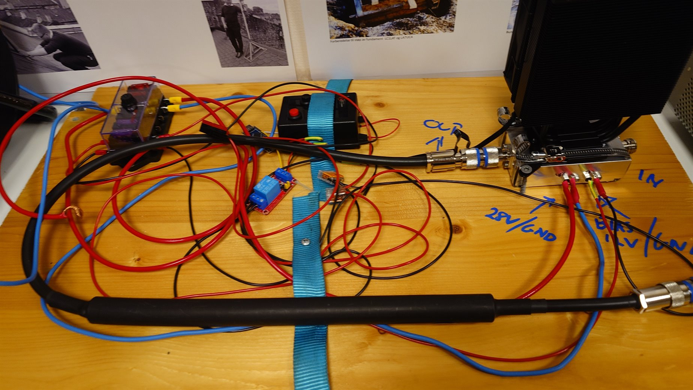
Judged as an artefact of engineering practice the board is easy to criticise, and LB6AJ is the first to say that with more time it would have been laid out properly: cable runs dressed and bundled, the fuse distribution and controller in a common enclosure, the cooler bolted rather than hose-clamped, and the whole assembly on a plate designed for the purpose rather than on whatever timber came to hand. None of that was available on the afternoon of 3 July.
Judged instead against what it had to achieve, the improvisation was sound, and several of its features are better than they appear. Fixing the components to a rigid substrate is genuine strain relief: every connection that would otherwise have taken the load of handling is now mechanically referenced to the same rigid object, which is precisely why nothing broke in transit on 3 July or on either pass of 27 July. Writing the designations on the board addresses the real hazard of this amplifier — applying 28 V drain without gate bias, or reversing the RF path — by putting the labelling where the operator’s hands actually are, permanently and unpowered. The strap converts the assembly into something one person can carry up a stairwell. And the whole thing is inspectable at a glance: every conductor, fuse and terminal is visible without opening anything, which is worth more during a time-critical rooftop setup than a tidy loom would have been.
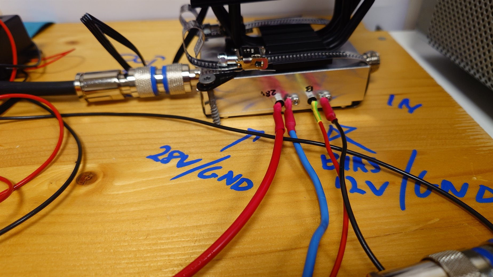
The board therefore records something more general about the campaign than its own untidiness. The team was working to externally scheduled pass windows that could not be moved, with volunteer time and domestic logistics, and repeatedly had to choose between an elegant solution that would not be ready and an adequate one that would. It is the same trade visible in the chalk azimuth marks, the manual bias arming and the CPU cooler on jubilee clips. The correct engineering judgement in that situation is to identify the failure mode that actually threatens the pass — here, breaking a connection while carrying the equipment — and to eliminate it by the fastest reliable means available. That is what the board did, and it did it for the rest of the campaign without a single connection fault. The one connector problem the group did encounter came on the evening of 27 July, in a power cable that was not part of this assembly.
4.5 The common-mode choke used as a patch cable
The heavy black coaxial assembly visible on the amplifier board in Figures 7 and 8 is not an ordinary patch lead. It is a WiMo coaxial common-mode choke, order number 11540: one metre of RG-213UBX threaded through ferrite cores and terminated in UHF (PL) connectors, and it was in the transmit path on 3 July and again on both passes of 27 July. It was pressed into service for an unglamorous reason — the club’s ready-made patch leads are predominantly RG58, and this was simply the most substantial RG-213 patch available on the day. It was used as a cable, not as a choke.
Two things about that are worth a sentence each. The cable choice was, by accident, the right one: at 23 cm RG-213 loses roughly half as much per metre as RG58, so reaching for the heavier assembly was better than the alternative to hand. The ferrite, on the other hand, was doing nothing. The manufacturer rates the part for 1–30 MHz; at 1296 MHz it is more than forty times above the top of its band, the cores have long since lost useful permeability, and the quoted 0.5 dB attenuation and 2 kW rating are HF figures that carry no weight at 23 cm. The assembly contributed a metre of RG-213 and two UHF-series transitions, and nothing else.
It was in the path on 27 July as well, and how it got there is worth recording. When the crew found during setup that the amplifier’s input and output had been connected the wrong way round, the quickest way to re-route the cables on the spot was to put the choke assembly between the transceiver and the amplifier input. It stayed there for both passes. Because it is heavy it was laid along the edge of the wooden board behind the amplifier so that it would not drag the power meter off the table, and a large adjustable spanner was set on top of the meter to hold that in place. No photographs were taken from behind the station, so none of this is visible in the plates of Appendix E.
Its position matters more than its presence. Sitting ahead of the amplifier, whatever loss it contributes is drive loss, and drive loss is made up by the amplifier’s roughly 15 dB of gain and the transceiver’s adjustable output — it costs a little more drive, not radiated power. The same assembly placed after the amplifier would have come straight off the EIRP. That it ended up on the drive side was not a considered decision; it was where the cables reached.
4.6 Antenna and pointing
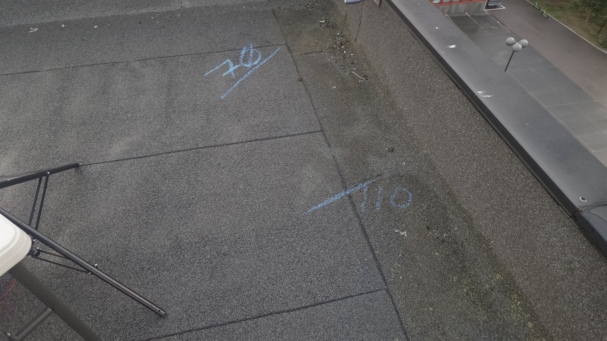
The Helix23-2 was selected over the 13 dBi alternative for its 15.1 dBi nominal gain. RHCP matched the requested polarisation. Its approximately 30° beamwidth allowed fixed elevation and manual azimuth tracking. Chalk bearings on the roof enabled rapid, repeatable movement without pausing to measure each heading.
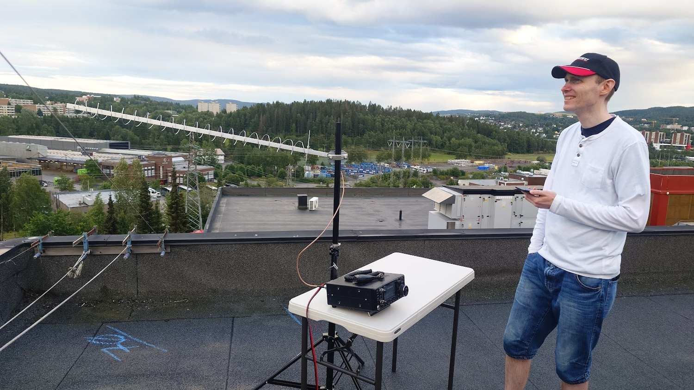
4.7 Link budget
An indicated 80 W is 49.03 dBm conducted power. Adding 15.1 dBi nominal antenna gain gives 64.13 dBm ideal EIRP, or about 2.59 kW equivalent. Allowing 1–2.5 dB for the post-meter feedline, extra cable and adapters gives an estimated 61.6–63.1 dBm (1.45–2.04 kW EIRP).
Digital signal processing
5.1 Failure mechanism
The decisive diagnosis followed the 3 July reception. PRETTY had recorded LA4O, yet the original processing produced mostly static. The chain passed an approximately 170 kHz channel into the FM discriminator while the NFM transmission occupied only a small fraction of that width. Integrated noise increased with bandwidth, reducing the effective post-demodulation intelligibility and degrading STT input.
5.2 Narrowing solution
LB6AJ’s numpy/scipy analysis searched for the dominant signal within the expected Doppler region, used the detected offset as a frequency estimate, shifted that component to baseband, low-pass filtered around the useful channel and decimated before discrimination. The method both reduced noise bandwidth and corrected residual tuning error. Recognisable speech emerged from captures that had previously sounded unusable.
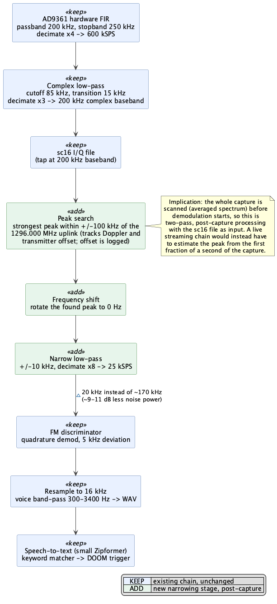
sc16 file. A live streaming chain would instead have to estimate the offset from the first fraction of a second.Source: Georges Labrèche, Tanagra Space, 13 July 2026.The improvement is visible before it is audible. Figure 12 places the as-flown and narrowed audio spectrograms side by side for two of the 3 July snapshots. In the upper pair the voice is buried in a broadband wash; in the lower pair the harmonic structure of speech is unmistakable, with clear formant bands and silences between syllables.
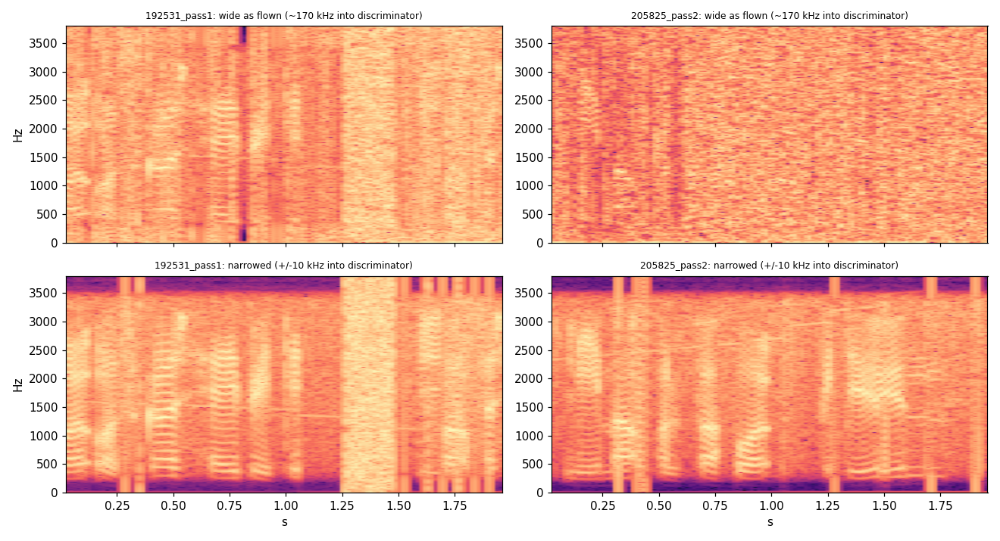
LISTEN · AS FLOWN (LEFT) VERSUS NARROWED (RIGHT)
The five 3 July snapshots that contained a carrier, demodulated both ways from the same stored I/Q. The left column is the chain exactly as it flew on 3 July; the right is the same data through the added peak search, frequency shift and ±10 kHz channel filter. Nothing about the transmission differs between the two columns — only the bandwidth presented to the discriminator. This is the single change that moved the campaign from static to intelligible speech.
5.3 Independent reproduction and flight integration
On 13 July, Georges Labrèche reproduced the result in C++ GNU Radio and independently in Python. Agreement across implementations reduced the chance that the result depended on an accidental offline parameter. A redundant second audio-filtering pass before STT was removed. The revised pipeline was compiled for the satellite ARM processor and exercised against the engineering environment.
5.4 Why decimation mattered
Decimation was not simply a computational optimisation. After anti-alias filtering it reduced the sample rate to one appropriate for the useful channel, making the discriminator operate on a representation dominated by the desired modulation rather than wideband noise. Carrier centring also prevented an offset signal from approaching the passband edge as Doppler changed.
Speech recognition and command design
Of all the subsystems in the chain, the recogniser was the least forgiving and the least intuitive. It could not be improved by adding power, and its behaviour could not be predicted by listening. The only reliable method was to run candidate audio through the exact deployed model and read what it produced.
6.1 The flight recogniser
The onboard recogniser is the small Zipformer transducer distributed as sherpa-onnx-zipformer-small-en-2023-06-26. Four files from that package are carried on the spacecraft: an int8-quantised encoder, a full-precision decoder, an int8-quantised joiner and the token table. Quantising the encoder and joiner brings the complete model to approximately 27 MB, which is what allows it to run inside the SEPP memory and compute budget. Decoding uses modified_beam_search on a single thread.
An early discrepancy in the campaign traced directly to model identity. LA4O’s first screening runs used sherpa-onnx-zipformer-en-2023-06-26—the larger, non-small variant, which carries a different token set—and produced transcripts that disagreed with Tanagra Space’s. Once the exact small-model files and decoding method were adopted on 10 July, ground and flight transcripts converged. The episode is a useful reminder that “the same model family” is not the same model: for this kind of work the acoustic model, quantisation and decoder configuration are part of the interface specification and must be pinned as precisely as a frequency or a connector type.
6.2 Command grammar and the onboard scoring rule
Detection aboard PRETTY is not a single keyword test. The experiment listens for the wake word PRETTY and for the commands DOOM or PLAY DOOM, and it applies a deliberately tolerant matcher because it must succeed on speech that has already been damaged by the channel. The flight configuration used on 27 July set detect_fuzzy_max_distance=1, meaning a token within a single character edit of the target—and starting with the same letter—still counts.
| Element | Configured value | Scoring behaviour |
|---|---|---|
| Wake word | PRETTY | 2 points for an exact match or a known phonetic variant (PRETY, BRETTY, PREDDY); 1 point within one edit. |
| Command | DOOM, PLAY DOOM | Same scoring. Either command match launches DOOM immediately; the points only record confidence. |
| Fuzzy tolerance | detect_fuzzy_max_distance=1 | Admits DOOMS, DOON, DOM, DUM, DOOME as approximate DOOM. |
| Call signs | 36 phonetic and word tokens including LIMA, ALPHA, OSCAR | Logged for attribution only; they score nothing and cannot trigger a launch. |
This structure explains the phrase LA4O adopted: “Lima Alfa Four Oscar. PRETTY, PRETTY, please play DOOM. DOOM. DOOM.” The call sign satisfies the legal identification requirement and provides attribution; the wake word raises confidence; and the repeated command ending provides several independent chances for at least one DOOM token to survive. Because detection triggers on the first match rather than on an accumulated score, redundancy costs nothing and can only help.
6.3 Why synthetic speech was chosen
It is worth being precise about what the screening work was based on, because it was not based on the keyer files themselves. Those had been recorded by LB9BJ and lived on the SD card of LB5SK’s transceiver, and LB6AJ did not have a copy while the analysis was under way. What he had were the spacecraft’s own recordings of the 3 July transmission and a local video recording made on the roof, and from those the recogniser plainly struggled with the operator’s voice.
That is not a criticism of the speaker. It is a property of the model: a small English transducer trained predominantly on standard US and British speech, with Norwegian-accented English outside its strongest region. Rather than ask operators to modify their pronunciation, the team treated the voice itself as an engineering parameter, on the working assumption that a synthetic voice would be more standardised than any of the club’s own and therefore a more predictable thing to optimise against the deployed model.
6.4 Screening twenty-nine voices
Twenty-nine Piper text-to-speech voices—US and British, at low, medium and high quality—were used to synthesise the identical command phrase, and every resulting file was transcribed by the flight model. Seventeen produced a clean DOOM DOOM DOOM ending. The failures are more instructive than the successes: several voices that are entirely intelligible to a human listener collapsed the command into something the matcher could not accept. Table 5 lists representative outcomes.
| Voice | Flight-model transcript of the command ending | Assessment |
|---|---|---|
en_US-lessac-medium | … PRETTY PRETTY PLEASE PLAY DOOM DOOM DOOM | Clean triple match |
en_US-norman-medium | … PRETTY PRETTY PLEASE PLAY DOOM DOOM DOOM | Clean triple match |
en_US-arctic-medium | … PRETTY PRETTY PLEASE PLAY DOOM DOOM DO | Two exact, one degraded |
en_US-l2arctic-medium | … PRETTY PRETTY PLACE PLAY DOOM DOOM DOOM | Clean triple; wake word degraded to PLACE |
en_GB-cori-medium | … PRETTY PRETTY PEAS PLAY DOOM DOOM DOOM | Command intact, “please” lost |
en_US-libritts-high | … PRETTY PRETTY PLEASE PLAY DOON EUN DO | Highest-quality voice, worst command survival |
en_GB-jenny_dioco-medium | … PRETTY PRETTY PLEASE PLAY JANE JUNE JUNE | Command entirely lost |
en_GB-alba-medium | … PRETTY PRETTY PLEASE PLAY DOOM JIM DUM | One usable token of three |
en_GB-southern_english_female-low | … PRETTY PRETTY PLEASE PLAY DIN DINDING | Command entirely lost |
Counter-intuitive result. en_US-libritts-high, the highest-quality synthesis tested, was among the worst performers for command survival, while several medium-quality voices produced perfect triple matches. Perceptual naturalness and acoustic-model robustness are not the same objective, and optimising for the first can actively harm the second.
6.5 Simulated FM degradation
Clean-audio performance was necessary but not sufficient. The spacecraft would receive speech that had passed through a narrowband FM link at low carrier-to-noise ratio, and the relevant question was which voices survived that. A degradation chain was therefore built to impair each candidate in a way representative of the real path before presenting it to the recogniser.
WAV
±5 kHz dev.
Gaussian noise
to set CNR
discriminate
post-processing
+ matcher
Two CNR points were evaluated. At approximately 9 dB the result was severe: of the entire twenty-nine-voice set, exactly one voice—en_US-norman-medium—still yielded a token the matcher would accept, transcribing as “… WERE PRETTY PREDOM DOOM.” At approximately 12 dB, four voices survived. These four became the operational shortlist.
| Voice | CNR ≈ 9 dB | CNR ≈ 12 dB transcript (command ending) |
|---|---|---|
en_US-norman-medium | Survives — PREDOM DOOM | … PRETTY PRETTY PLEASED PLAY DOON DOOM |
en_US-lessac-medium | Fails | … PRETTY PRETTY PLEASE PLAY DOOM DOONE DOONE |
en_US-l2arctic-medium | Fails | … PRETTY PRETTY PLACE ZAI DOOM DOOM DOON |
en_US-arctic-medium | Fails | … PRETTY PRETTY PLEASE PLAY DOON DOOM DO |
| Remaining 25 voices | Fail | No acceptable command token recovered |
The pattern visible in Table 6 is the engineering justification for the repeated ending. In every surviving case the noise destroyed some of the three DOOM tokens, rendering them DOON, DOONE or DO—but in each case at least one survived intact. A single-utterance command would have failed for three of the four finalists at 12 dB. Repetition converted a marginal recogniser into a usable one without requiring any change to the RF link.
LISTEN · THE FOUR SURVIVING VOICES — CLEAN (LEFT) AND AT 12 dB CNR (RIGHT)
The four finalists of the 29-voice screening, each speaking “Lima Alfa Four Oscar. PRETTY, PRETTY, please play DOOM. DOOM. DOOM.” The left column is the clean synthesis; the right is the same file after the impairment chain of Figure 13 — FM modulation, added additive white Gaussian noise (AWGN) to set approximately 12 dB carrier-to-noise ratio, discrimination and post-processing. All four remained detectable by the flight matcher in the degraded form; the other twenty-five voices did not. Transcripts are in Tables 5 and 6.
6.6 Validation through the flight binary
The four finalists, in clean and 12 dB forms, produced eight test files. Tanagra Space ran these through the complete onboard chain—not the model alone, but the flight executable compiled for the spacecraft’s ARM processor, including the keyword matcher that makes the launch decision.
The first run disagreed with the ground results: norman and arctic failed at 12 dB. The discrepancy was not written off as measurement scatter. Georges Labrèche traced it on the Tanagra Space side and found a defect: the flight pipeline was filtering the audio a second time before handing it to the model, a stage made redundant by the new narrowing work described in Chapter 5. With that redundant pass removed, all eight files triggered DOOM and the flight transcripts converged on the ground transcripts. The fix was folded into the flight software alongside the narrowing change.
One caveat was recorded at the time and remains relevant: two of the 12 dB triggers matched on a single fragile token, close enough to the false-trigger boundary that Tanagra Space considered tightening the matcher. A keyer that repeats DOOM several times is robust against a tightened matcher; one that relies on a single marginal token is not.
6.7 Cadence: the extra-pause file
The final design variable was timing. On 14 July, after reviewing the eight flight-binary transcripts, Georges Labrèche observed that the model might perform better with longer pauses between the DOOM repetitions, while explicitly noting he had no evidence for it. LA4O treated this as a hypothesis worth flying rather than a settled conclusion, and produced a second keyer file accordingly. Both files were carried to the final pass so that the two cadences could be exercised within a single opportunity.
Both files are built from the same material: the four shortlisted voices, each speaking the complete phrase, laid end to end in the order norman, lessac, l2arctic, arctic. The normal file is those four recordings butted together. The extra-pause file is the same four recordings with each clip cut three times and the fragments spaced apart. No audio was re-recorded, re-synthesised or time-stretched. Figure 14 shows both tracks on a common time axis with the inserted silences marked, and Table 7 quantifies the difference.
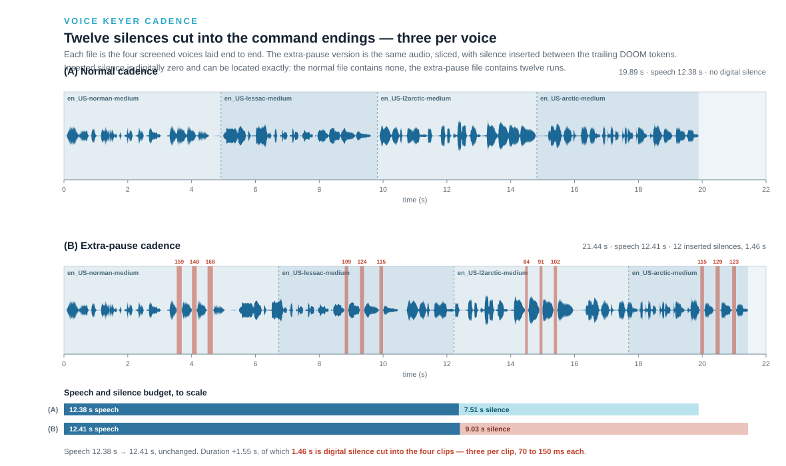
| Property | Normal file | Extra-pause file | Interpretation |
|---|---|---|---|
| Duration | 19.89 s | 21.44 s | +1.55 s per cycle (+7.8%) |
| Speech time | 13.52 s | 13.49 s | Unchanged — −0.2%, within measurement error |
| Silence time | 6.36 s | 7.94 s | +1.58 s, +24.8% |
| Inserted silences | none | 12 | Three at the end of each of the four voice clips |
| Inserted silence, total | — | 1.47 s | 84 to 168 ms each |
| Detected speech bursts | 37 | 44 | Seven additional word boundaries |
| Mean burst length | 366 ms | 307 ms | Tokens individually shorter and separable |
| Longest continuous burst | 1 525 ms | 695 ms | Run-on token groups broken up |
| Mean gap length | 174 ms | 182 ms | Similar — the added gaps match the existing ones in length |
The edit can be recovered exactly rather than inferred, because silence inserted in an editor is digitally zero while a pause inside a recording carries that recording’s noise floor. Searching both files for runs of true zero settles it: the normal file contains none at all, and the extra-pause file contains twelve — three at the end of each of the four voice clips, between 84 and 168 ms long and totalling 1.47 s. Nothing was drawn out, slowed or re-recorded; the editing was done with a knife, not a time-stretch.
Their placement is the design. Each clip ends with the repeated command — … please play DOOM. DOOM. DOOM. — and the three inserted silences fall precisely between those trailing tokens, in the last second and a half of every clip. The call sign and wake word at the front of each phrase were left untouched. The whole of the edit is aimed at one thing: giving the recogniser a clean boundary either side of each DOOM.
The effect is visible in the envelope. In the normal file the repeated DOOM tokens run together into blocks of up to 1 525 ms; in the extra-pause file the longest unbroken run is 695 ms, and the same words arrive separated. The inserted silences also shorten from clip to clip — about 158 ms in the first voice against 84 ms in the third — which suggests the spacing was judged by ear rather than applied as a fixed value.
This is precisely the impairment a transducer-based recogniser is sensitive to. A run-together “doomdoomdoom” gives the model no acoustic boundary to segment on and tends to be emitted as a single degraded token; the same words separated by 200 ms of silence present three independent recognition opportunities. The file is therefore not slower; it is the same speech with more space around it. The cost is a 7.8% longer cycle, which slightly reduces the fraction of a capture window occupied by speech — 68.0% falls to 63.0% — and the return is seven additional word boundaries for the recogniser to segment on.
LISTEN · THE TWO OPERATIONAL KEYER FILES
The files exactly as carried on the transceiver SD card and transmitted on 27 July. Each cycle presents the phrase four times in four different synthetic voices. The difference is audible in the command endings: in the normal file the repeated DOOM tokens run together, while in the extra-pause file each is separately articulated. No word is spoken more slowly in the second file — there is simply more silence around it. These are the 16 kHz renderings prepared on the morning of the pass; the 48 kHz originals of 01:32 and 01:39 would not play from the radio, which is the fault described in Section 6.8.
6.8 Radio-side implementation
The recognition work would have been academic had the files not played from the transmitter. LB5SK established on 11 July that the IC-9700 will play an arbitrary WAV file dropped onto its SD card with no additional configuration, provided the encoding is exact: signed 16-bit little-endian PCM, mono, 16 kHz, stored as e.g. \VoiceTx\voicetx3.wav. The card is reinserted and the file behaves as an ordinary voice keyer.
| Property | Selection | Reason |
|---|---|---|
| Container/content | WAV; signed 16-bit little-endian PCM | IC-9700 playback compatibility; other encodings silently fail |
| Channels/rate | Mono, 16 kHz | Verified working radio format; matches the recogniser’s native rate |
| Voices | Four finalists stitched into one cycle | Diversity against single-voice recognition failure |
| Lexical form | Call sign, wake word, repeated DOOM ending | Legal identification, attribution and recognition redundancy |
| Cadence | Normal and extra-pause variants | Balance capture occupancy against token segmentation |
| Radio path | \VoiceTx\voicetx3.wav | Direct SD-card keyer playback |
That specification is unforgiving, and it caused the last crisis of the campaign. The files initially loaded on the morning of 27 July would not play. The cause was a straightforward mistake: LB6AJ had rendered and sent them at 48 kHz instead of 16 kHz. The transceiver gives no indication why such a file is rejected, so from the roof the symptom was simply a keyer that did nothing. With LB6AJ north of the Arctic Circle and the crew already preparing at the club station in Oslo, the fault was diagnosed remotely, correctly re-encoded files were rendered and sent, and playback was confirmed by SMS before the pass opened. The timestamps on the two sets record the fix: the 48 kHz originals were made at 01:32 and 01:39, and the 16 kHz replacements at 10:02 and 10:03 the same morning.
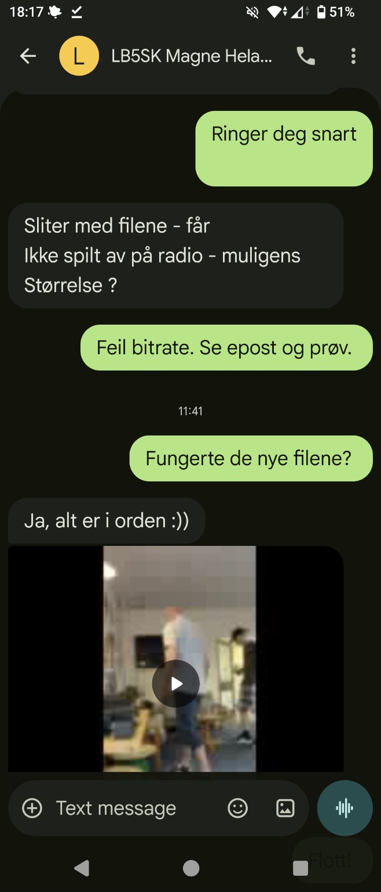
Engineering development
Concept and procurement
Following the invitation, LA4O established the 1296 MHz requirement, calculated an initial need for about 49 dBm EIRP, selected the higher-gain helix and ordered the PA. Antenna shipping prevented the 9 June attempt; a 10 June spacecraft-side run produced noise only.
Controlled RF detection campaign
Two Oslo-focused passes replaced command triggering with near-continuous identifiable speech. The first used the IC-9700 barefoot at 12.1° maximum elevation. The second, at 53.9°, provided the first on-air PA test, conservatively backed off. Thermal and current behaviour were nominal.
Flight evidence becomes a software fix
ESA confirmed reception and shared audio and I/Q. Offline narrowing recovered voice; Tanagra implemented the approach, removed redundant filtering and validated the flight binary. All shortlisted voice files then triggered the updated stack.
Measurement and operational readiness
The team obtained a broadband power meter, chose FIL3 narrow FM for future attempts, formalised the 28 V/current-limit procedure and confirmed two 27 July passes.
Demonstration
The morning station delivered both keyer variants at sustained high power. Three of six captures recognised the trigger and launched DOOM.
7.1 The 3 July passes: an instrumented listening test, not a command attempt
The 3 July campaign is routinely described in shorthand as the first attempt, which understates how carefully it was scoped. The DOOM experiment was not running. Neither the speech-to-text chain nor the command matcher was active, no trigger could have been generated, and no DOOM execution was possible on that date. What ran instead was ESA’s own capture pipeline aboard the spacecraft, which recorded six two-second wideband raw I/Q snapshots of the 1296 MHz band and downlinked them. There was no onboard audio at all; every audio rendering discussed in this report from that date was produced later, on the ground, by demodulating those snapshots.
That distinction is the reason the campaign succeeded. Had 3 July been run as a command attempt it would have returned a single bit — no detection — and no means of establishing why. Recording raw I/Q instead returned the entire received signal, which could then be demodulated repeatedly, by different people, using different assumptions, until the failure mechanism was isolated. The decision to maximise observability rather than attempt the final objective is what converted an unsuccessful pass into the diagnostic dataset that Chapter 5 is built on.
Of the six snapshots, one — 19:24:33 on pass 1 — was taken before the transmission began and contains only noise. The remaining five carry the uplink.
| Parameter | Pass 1 | Pass 2 |
|---|---|---|
| AOS / LOS | 19:22:08 / 19:28:19 | 20:53:37 / 21:02:37 |
| Maximum elevation | 12.1° at 19:25:13 | 53.9° at 20:58:06 |
| Snapshots recorded | 19:24:33, 19:25:11, 19:25:31 | 20:57:27, 20:58:05, 20:58:25 |
| RF chain | IC-9700 barefoot | IC-9700 + backed-off PA |
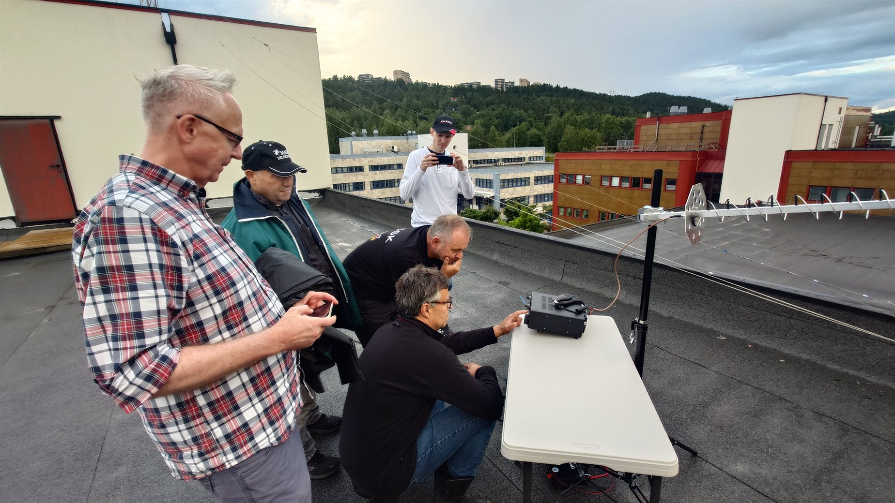
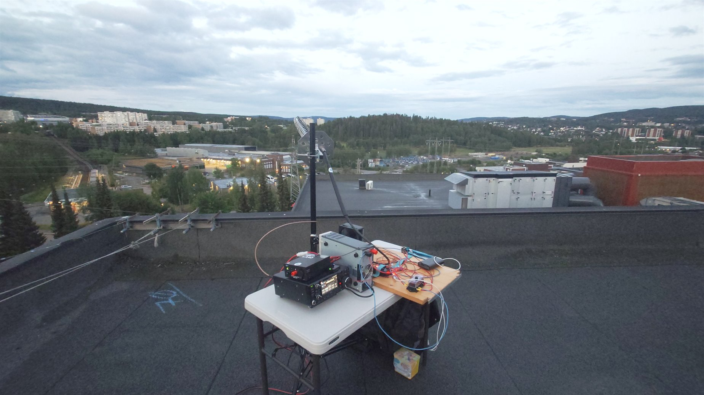
7.1.1 The first audio: “surely this is the voice of LB9BJ”
Nothing in the campaign mattered more than the file that arrived on the evening of 6 July. Ólafur Waage forwarded it with the note that it was from the first pass only, that the team was still working on the second, and that with audio in hand speech recognition should now be achievable. It is two seconds long, and by any ordinary standard it is a poor recording. It is also the first time LA4O heard itself from orbit.
LISTEN · THE FIRST AUDIO RETURNED FROM THE SPACECRAFT
The first audio LA4O ever received back from OPS-SAT PRETTY, returned by ESA on 6 July 2026 from the low-elevation first pass of 3 July. Faint, noisy, and decisive: it established that the uplink was reaching the spacecraft and that the remaining problem was signal processing rather than link budget.
Three days later, after LB6AJ had processed the snapshots with numpy and scipy, the group could do something no measurement had yet allowed. They could tell who they were listening to.
“Surely this is the voice of LB9BJ Jon, who recorded the voice keyer.”LB6AJ — email to the project group, 9 July 2026, 15:20 CEST
LISTEN · THE FILE THAT PROMPTED IT
The 19:25:11 snapshot from the first 3 July pass, recovered on the ground by LB6AJ using numpy and scipy, and circulated to the group on 9 July with the message quoted above. This is the file in which the operator’s voice first became identifiable as a particular person rather than as speech in general.
It is worth pausing on that sentence, because it is the moment the project stopped being an exercise in link budgets. This was not a carrier, not a tone, not a detection statistic. It was LB9BJ’s voice — a named member of the club, recorded on a rooftop in Oslo, transmitted 520 km into space, recorded aboard a spacecraft travelling at 7.6 km/s, downlinked, and then recognised by the people who knew him well enough to name him from two seconds of noisy audio.
Every question that remained after 6 July was a question of degree. Could the speech be made clearer, could the recogniser be made to accept it, could the timing be made to line up. The question of whether an amateur station in Oslo could put an intelligible human voice into a spacecraft had been answered, and the answer was audible.
The same message set the agenda for the next four weeks. Signal strength was about equal on both passes despite the amplifier, suggesting the extra power had been lost to pointing or an unmeasured path loss; the amplifier should be driven to specification next time now that cooling had proved adequate; the transmission had used the wide FIL1 filter and should use FIL3; and LB6AJ had theories about the noise that he intended to put to Tanagra Space. Each of those four observations became a work item, and all four are closed elsewhere in this report.
7.1.2 What the raw snapshots contained
Proving the voice was there was one thing; understanding why the flight pipeline could not use it was another. Over the following days the downlinked I/Q was rendered on the ground in a graded series, from the least-processed view of the band through to the exact output the DOOM pipeline would have produced. The series is reproduced here because each step isolates a different question.
LISTEN · THE 3 JULY SNAPSHOTS, RENDERED FOUR WAYS
The first rendering shifts the carrier to an audible tone: the keying is plainly audible, switching off and on with the operators’ pauses to rotate the antenna — unambiguous proof that the uplink reached the spacecraft. The second recovers speech using a demodulator matched to the received signal. The third is the flight chain as it actually ran, and is the sound of the problem: the same voice, buried. The fourth is the clearest recovery achieved from 3 July, produced by Georges Labrèche using a third-party denoiser that could not be run onboard; it is included as an upper bound on what ground post-processing can reach, not as anything the spacecraft could produce.
Final demonstration — 27 July 2026
The morning pass combined the revised flight DSP, validated speech files, direct RF indication and an experienced rooftop crew. It was the first test in which every previously identified weakness had an explicit mitigation.
8.1 Organisation and setup
LA7IJ, LB5SK and LB9BJ operated from the club roof at Nedre Rommen in north-eastern Oslo (JO59kx), approximately 160 m above mean sea level — a useful starting height that contributes directly to the low-elevation horizon and was one reason the site was preferred to Stovnertårnet. LB6AJ supported the pass remotely from Steigen (JP77rw), re-rendering the keyer files when they proved unplayable and answering questions from the crew by telephone through the setup. The crew met at approximately 11:00 CEST, recovered the equipment, checked the SX-1000 into a dummy load and erected the station in approximately the same roof location used on 3 July. The helix was raised one mechanical step to an estimated fixed elevation of 30–40°.
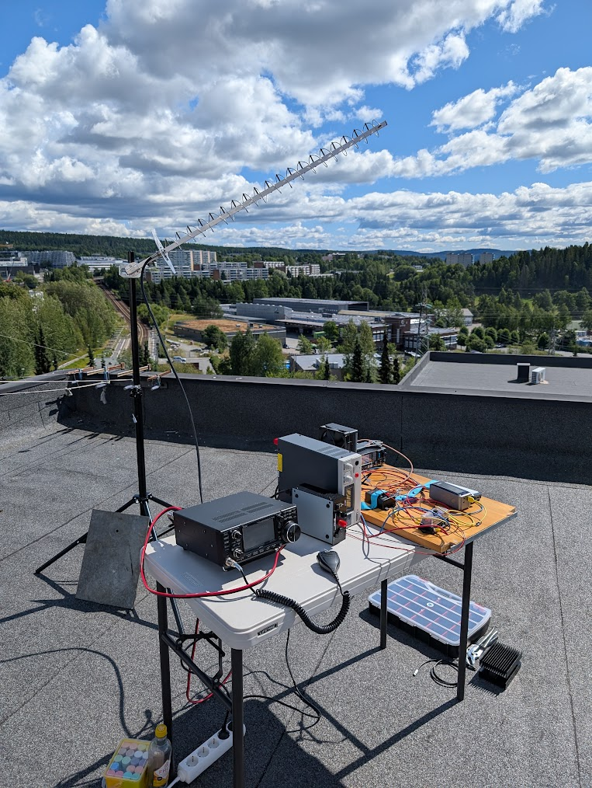
Setup began indoors. Figure 19 shows the equipment staged at 11:37 CEST with the IC-9700 already set to 1296.000 MHz in FM, the SX-1000 alongside, and the adapter chain and patch leads laid out for the roof. The transceiver’s voice-transmit memories are visible on the touchscreen, T1 labelled call and T2 labelled doom — the mechanism by which the keyer files described in Chapter 6 were played.
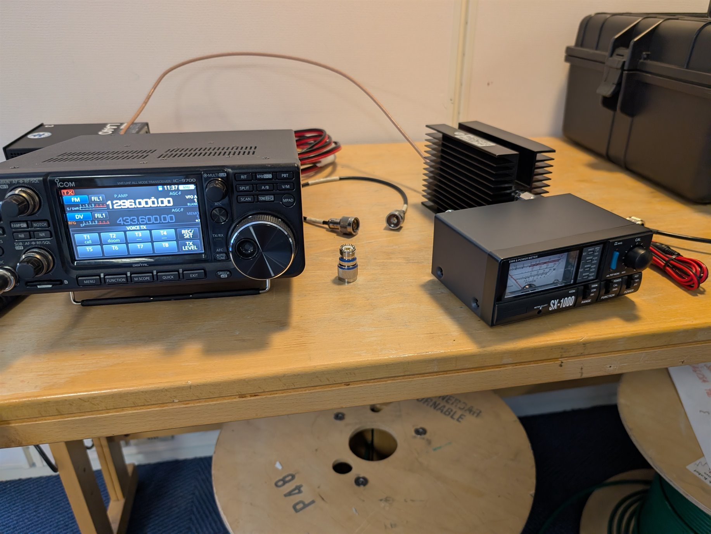
Two setup events were caught without damage. The PA input and output were initially reversed but corrected before power or transmission. The first voice files proved incompatible with the IC-9700; remote diagnosis identified encoding/bitrate as the likely cause, and replacement files were successfully tested before the pass.
8.2 Pass plan
| Pass | Maximum elevation UTC / CEST | Angle | Planned purpose |
|---|---|---|---|
| Morning | 10:51:54 / 12:51:54 | 60.7° | Two TTS variants; sustained uplink |
| Evening | 21:37:57 / 23:37:57 | 69.9° | Human-voice follow-on proposed |
8.3 Morning operations
| Time | Action |
|---|---|
| ≈12:45 | Normal-speed TTS keyer and continuous transmission started. |
| First half | Antenna rotated manually using Look4Sat predictions. |
| 12:49 | LB6AJ photographed the predicted sky position from Steigen and sent it to Rommen. |
| ≈12:52 | Antenna rotated and keyer changed to extra-pause version. |
| 12:58 | Transmission stopped after PRETTY passed below the local horizon. |
Figures 20 and 21 were taken by LB9BJ at 12:52:52 and 12:53:11 CEST — that is, 10:52:52 and 10:53:11 UTC, which places them inside the spacecraft’s capture sequence, between captures 4 and 5 and during capture 5 respectively. Both of those captures detected the command and launched DOOM. They are therefore contemporaneous ground photographs of the station while the successful uplink was being recorded in orbit.
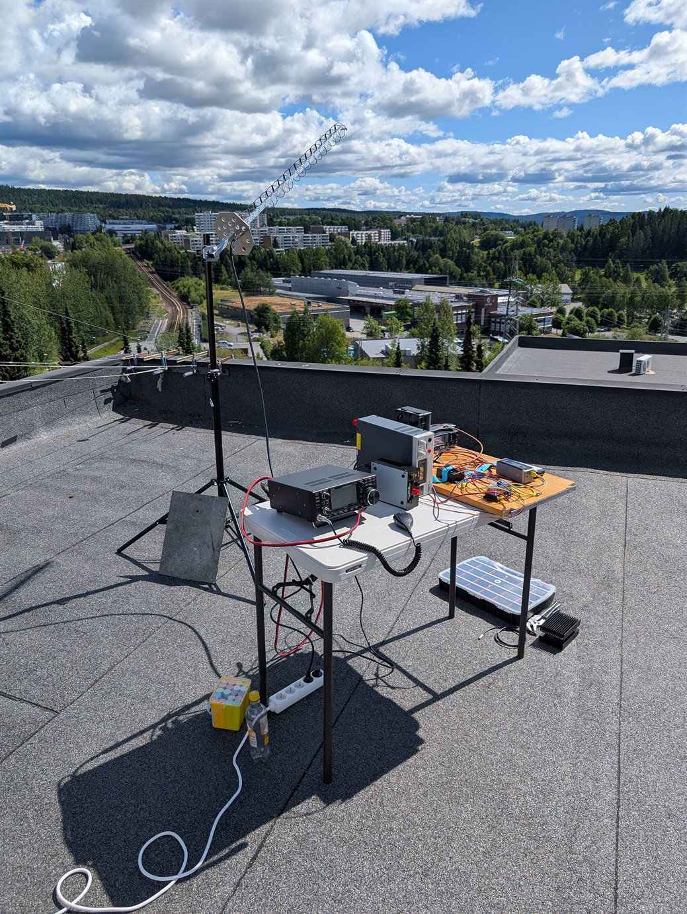
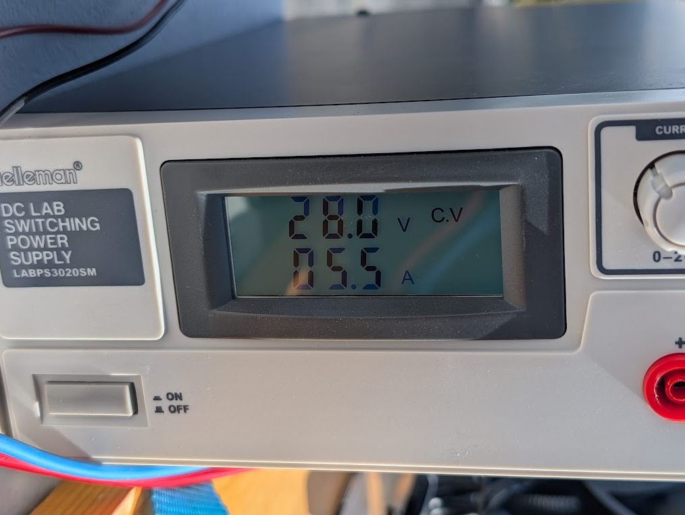
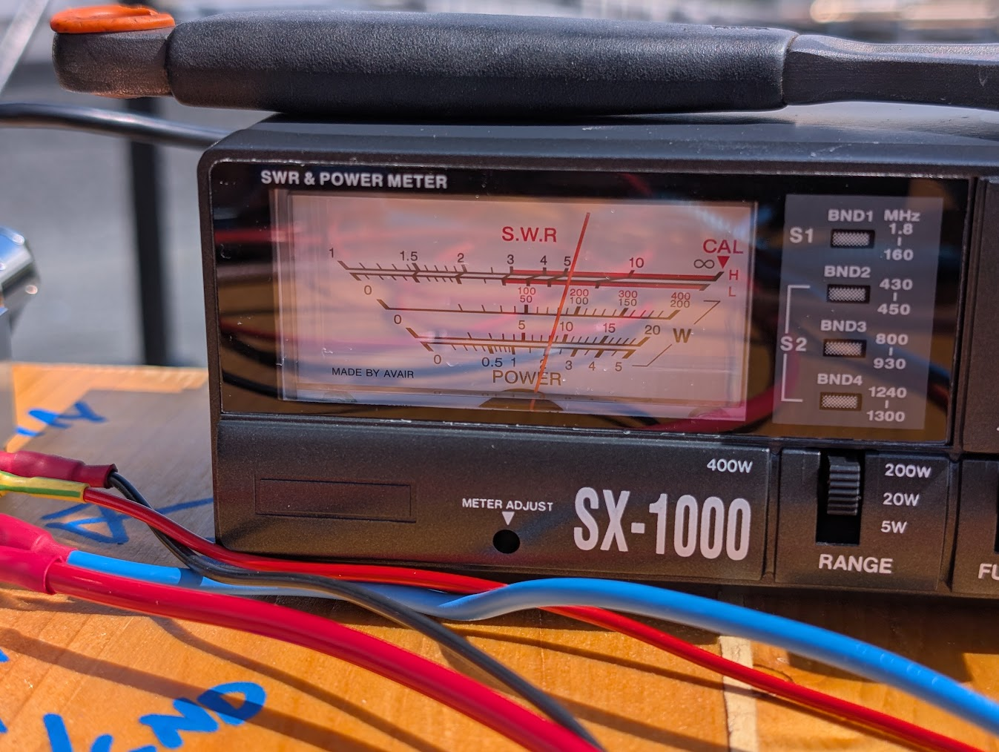
| Parameter | Value | Confidence |
|---|---|---|
| IC-9700 setting | 35% | Operator setting, confirmed photographically |
| PA drain | 28 V, ≈5.5 A continuously | Direct supply display |
| RF output | ≈80 W continuously | Indicated; calibration unresolved |
| Thermal state | Only slightly warm to the touch | Qualitative observation; the crew noted that the amplifier stood in direct sunshine throughout, so some of the warmth was not of its own making |
| Audio | Normal first half; extra pauses second half | Operator record |
8.4 Remote observation
LB6AJ observed the pass from JP77rw, 912.20 km from Rommen on an initial bearing of 196.3°. The photograph at 12:49 CEST preceded maximum elevation over the Oslo station by 174 s. It did not represent closest approach to Steigen, but provided a human-scale record of simultaneous operations at two locations.
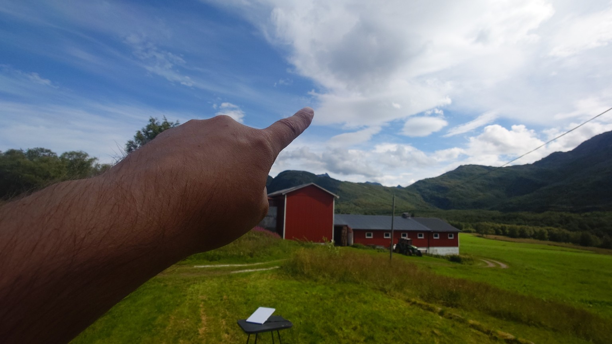
Spacecraft results
At 16:41 CEST, ESA reported nominal spacecraft operation during the morning pass. LA4O confirmed that the ground chain had operated without problems, maintained approximately 80 W indicated output and used both planned TTS files. Later that evening Tanagra Space delivered the decisive result.
“Holy moly, it WORKED! Awesome! Capture #1, #4, and #5 detected the trigger word and ran DOOM!”Georges Labrèche, Tanagra Space — email to the project team, 27 July 2026, 19:44 CEST
The spacecraft had accepted three of six capture opportunities. Tanagra Space supplied captured audio, an onboard transcript postcard and a gameplay segment immediately, and the complete downlinked artifact set followed. That artifact set—experiment package pack-4023—is the primary evidence for this chapter, and it permits a considerably more detailed account than the correspondence alone. It contains the onboard execution log, the pipeline configuration actually flown, per-capture I/Q diagnostics, power spectral density and spectrogram products, the recovered audio, the transcripts, the detection scores and the DOOM artifacts. This chapter therefore reports not only that the experiment succeeded, but why each individual capture succeeded or failed.
9.1 Experiment execution
The experiment ran as systemd unit exp@4023.service on the SEPP host sepp1, in a dedicated machine container. The platform log brackets the activity precisely: the unit started at 10:50:53 UTC, reported Run 00001 at 10:50:55, and the container terminated at 10:56:00. The experiment software identified itself as PRETTY DOOMed v7 and completed its run in 304.1 s.
ESA had confirmed the run the previous night and supplied the geodetic target as an ECEF vector, 3149143.1, 598008.8, 5495694.5 m. Converted to WGS-84 this is 59.9139° N, 10.7522° E at 23 m elevation—central Oslo. The LA4O station at Rommen lies approximately 9.7 km to the north-east of that point, a separation subtending roughly 1° as seen from a 520 km orbit and therefore negligible against the spacecraft antenna pattern.
| Stage | Configured value | Engineering significance |
|---|---|---|
| RX centre frequency | 1 296.000 MHz, LO readback confirmed | Matches the LA4O transmit frequency exactly. |
| ADC rate | 2.4 MSPS (AD9361) | Raw front-end rate before any decimation. |
| Hardware FIR | Enabled; 128-tap, ÷4 to 600 kSPS; Fpass 200 kHz, Fstop 250 kHz | Offloads the first decimation from the ARM core; readback confirmed 599 999 Hz. |
| Analog RX bandwidth | 350 kHz | Comfortably exceeds the ±32 kHz Doppler excursion, as the operator brief promised. |
| Software decimation | ÷3 to 200 kHz complex baseband | The I/Q tap written to the .sc16 file. |
| RX gain | 50 dB, manual gain control | Fixed gain; no AGC, so I/Q RMS is directly comparable between captures. |
| Narrowing stage | Enabled; peak search ±100 kHz, channel ±10 kHz, 25 kSPS at the discriminator | The LA4O-proposed fix, flying operationally. |
| FM discriminator | Quadrature demodulation, 5 kHz deviation | Narrowband FM, matched to the uplink. |
| Audio output | 16 kHz, 300–3 400 Hz bandpass, RMS normalised to −20 dBFS | Native rate of the recogniser. |
| Capture schedule | 6 captures × 20 s, background processing | Six independent detection opportunities per run. |
The fix was flying. The configuration line sdr_narrow_enable=true, with a ±100 kHz peak search and a ±10 kHz channel decimated to 25 kSPS at the discriminator, is the three-step modification LA4O proposed on 10 July, implemented by Tanagra Space and executed autonomously in orbit seventeen days later. Every recovered transcript in this chapter passed through it.
9.2 Capture-by-capture results
Six 20 s captures were taken between 10:51:02 and 10:54:05 UTC, each immediately narrowed, normalised and queued for background transcription while the next capture proceeded. Because the receive gain was fixed and no AGC was active, the logged I/Q RMS is a directly comparable indication of received signal-plus-noise level across the six. Table 14 assembles the complete per-capture record.
| # | Capture end (UTC) | Peak found | I/Q RMS | ADC zeros | Speech contrast | Wake / DOOM | Score | Outcome |
|---|---|---|---|---|---|---|---|---|
| 1 | 10:51:23 | +8.96 kHz | −44.6 dBFS | 0.85% | 15.4 dB | 8 / 6 | 25 | DOOM launched |
| 2 | 10:51:49 | +72.66 kHz | −50.8 dBFS | 2.69% | 9.1 dB | 0 / 0 | 0 | No command |
| 3 | 10:52:14 | +18.38 kHz | −53.2 dBFS | 3.34% | 1.8 dB | 0 / 0 | 0 | No command |
| 4 | 10:52:46 | −25.10 kHz | −46.6 dBFS | 0.97% | 13.9 dB | 3 / 3 | 10 | DOOM launched |
| 5 | 10:53:19 | −27.29 kHz | −48.4 dBFS | 1.20% | 12.8 dB | 5 / 4 | 14 | DOOM launched |
| 6 | 10:53:45 | −32.35 kHz | −49.6 dBFS | 2.45% | 10.4 dB | 3 / 0 | 6 | No command |
“Peak found” is the offset the onboard narrowing stage selected within its ±100 kHz search. These are the values used throughout this report and they are the ones consistent with the pass geometry. The spectrogram images returned alongside them place the same offsets on the opposite side of the centre line, which appears to be an inverted frequency axis in the plotting rather than a disagreement about the measurement itself — the magnitudes match exactly in every capture. “Speech contrast” is a post-hoc ground measurement made for this report: the ratio between the 90th-percentile and 25th-percentile short-term envelope of the downlinked audio, expressed in dB. It is a measure of how far speech stands above the residual noise in the recovered audio, and is related to but not identical with carrier-to-noise ratio.
9.3 Doppler as a free measurement
The peak-search offsets in Table 14 are a by-product of the narrowing stage, but they constitute a genuine Doppler measurement. Discarding the two anomalous values discussed below, the sequence runs +8.96, −25.10, −27.29 and −32.35 kHz—a monotonic descent through zero consistent with a spacecraft passing overhead, with the zero crossing falling between captures 3 and 4. Maximum elevation occurred at 10:51:54 UTC, and the descending trend is entirely consistent with that geometry. The total excursion is within the ±32 kHz predicted in the operator brief, allowing for a fixed transmit-frequency offset of a few kilohertz from the ground transceiver, which at 1296 MHz corresponds to well under 1 ppm.
This is a useful secondary result in its own right. A stage added purely to improve intelligibility also yields, at no additional cost, a per-capture radial-velocity measurement that can be logged and used to verify pointing, orbit knowledge and transmitter calibration.
9.4 Why three captures failed
The three unsuccessful captures did not fail for the same reason, and the downlinked spectral products make the distinction unambiguous. Figure 25 overlays the power spectral density of all six captures on a common axis.
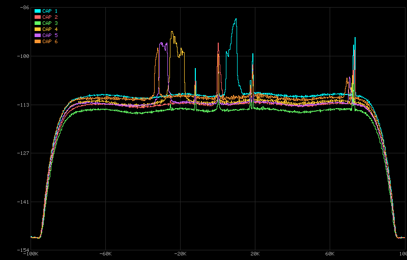
pack-4023, morning run 00001 of 27 July. Reproduced exactly as received.Two distinct failure mechanisms are visible.
Captures 2 and 3 — frequency-estimator mis-lock
Neither capture contains a detectable FM uplink hump. In the absence of the wanted signal, the ±100 kHz peak search did what it was designed to do and returned the strongest spectral feature it could find—which, in a capture containing no uplink, is a receiver-internal spur. Capture 2 locked to +72.66 kHz and capture 3 to +18.38 kHz, both coinciding with narrow spikes visible in Figure 25 and both inconsistent with the physically achievable Doppler for a 520 km orbit at 1296 MHz, which cannot exceed roughly ±32 kHz. Having locked to a spur, the narrowing stage then band-limited to ±10 kHz around it and discarded everything else, so even the residual uplink energy was filtered away before demodulation. The recovered transcripts were correspondingly empty: “AND THIS TIME” and “AND”.
The spectrograms confirm the sequence directly. Figure 26 shows capture 1, in which the modulated uplink trace is continuously present for the full 20 s. Figure 27 shows capture 2, in which the same trace is present for approximately the first 5.5 s and then disappears entirely.
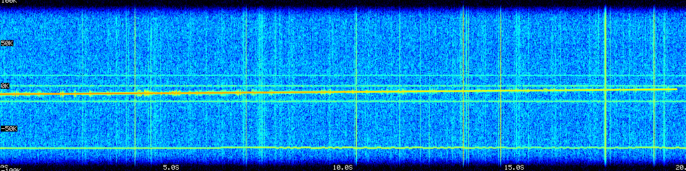
pack-4023, morning run 00001 of 27 July. Reproduced without reprocessing; BMP products converted to PNG only.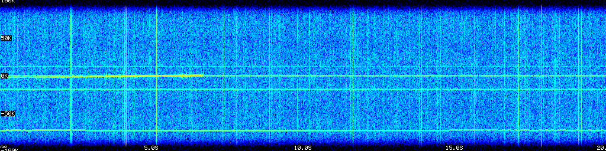
pack-4023, morning run 00001 of 27 July. Reproduced without reprocessing; BMP products converted to PNG only.The most probable cause of the dropout is ground-side antenna pointing. The helix was set to a fixed elevation estimated at 30–40° with an approximately 30° beamwidth, giving useful coverage to roughly 45–55° elevation, while this pass culminated at 60.7°. Around maximum elevation the spacecraft was therefore near or beyond the upper edge of the fixed beam, and the angular rate—highest at culmination—was also least forgiving of manual azimuth tracking. Captures 2 and 3 span 10:51:27 to 10:52:14 and bracket the 10:51:54 culmination almost exactly. The report presents this as the interpretation best supported by the available evidence rather than as a measured fact; confirming it would require synchronised antenna-pointing telemetry, which the ground station did not record.
Capture 6 — genuine recognition-margin failure
Capture 6 is a different case and, for engineering purposes, the more interesting one. Its peak search behaved correctly, returning −32.35 kHz in proper sequence, and the recovered audio contains real speech: the transcript reads “FEMALE THE FORECTOR PRETTY PRIESTLY PLAY HE IS YOU MAY HAVE A FALL FROM BREEDY PRETTY PLACES ONLY I KNOW THE POOR OFFICER PRETTY CURIOUSLY SOCIETY.” The wake word survived three times and scored 6 points. Not one DOOM token survived. The link delivered the signal, the DSP recovered the speech, and the command was lost in the final metre—inside the acoustic model.
LISTEN · WHAT THE SPACECRAFT HEARD
All six recovered audio files from the morning run, downlinked in experiment package pack-4023. These are the exact 16 kHz signals presented to the onboard recogniser, after the narrowing stage and RMS normalisation to −20 dBFS — not cleaned-up ground renderings. Captures 1, 4 and 5 launched DOOM; 2 and 3 contain almost nothing, because the frequency estimator locked to a spur; capture 6 carries clearly audible speech in which no DOOM token survived. Heard in sequence the difference between the strongest and weakest of them is unmistakable, though Section 9.4.1 explains why that impression does not survive as a measurable threshold. Transcripts are in Appendix D.
9.4.1 Why the threshold does not generalise
Applying the same measurement to the evening pass breaks the pattern. Three evening captures scored 17.2, 18.1 and 14.6 dB — all above the morning boundary, and the middle figure the highest of any capture in the campaign — and none of them detected a command. The one that did detect scored 15.6 dB, comfortably inside the range occupied by the failures.
The cause is in the metric rather than in the spacecraft. Speech contrast is a ratio of envelope percentiles, and every capture is RMS-normalised to −20 dBFS before the recogniser sees it. A capture that is largely noise with one short burst of signal is therefore amplified until that burst is loud, which produces a large percentile ratio from a poor recording. Evening capture 3 is the clearest example: nearly the weakest received signal of the pass at −52.4 dBFS, the highest contrast figure in the report at 18.1 dB, and a two-word transcript.
The two passes make the point between them. Across the morning captures, contrast and received signal strength correlate strongly, with a coefficient of +0.94; across the evening captures the correlation falls to +0.47. When the link is behaving, contrast is a serviceable proxy for how much signal arrived and therefore tracks detection. When it is not, contrast measures the structure of the noise instead. No single scalar in the downlinked data predicts detection across both passes — transcript length does not either, capture 6 of the morning producing twenty-six words and no command.
9.5 The detection event
The first successful detection is recorded in the execution log with the timing granularity of the flight software. Capture 1 had been transcribed in the background over 51.7 s while captures 2 and 3 were being taken; when the matcher completed, the decision and the launch followed within one millisecond.
[2026-07-27 10:52:19.470][c1/t274] Transcription: FOR PRETTY PRETTY PLEASE PLAY DOON DO MIMI
EL THE FORASCAR PRETTY PRETTY PLEASE PLAY DOOMS DOONES DOONES WE
MIGHT HAVE A FORE OFF FOR PRETTY PRETTY PLACE SIDE DOOMS DO SOON
SWEEN OUT AFORE OSSICA PRETTY PRETTY PLEASE PLAY DO SO STEW
[2026-07-27 10:52:19.470][c1/t274] Detecting command...
[2026-07-27 10:52:19.478][c1/t274] Wake word: 8 (exact=8, approx=0)
[2026-07-27 10:52:19.478][c1/t274] Command [DOOM]: 6 (exact=0, approx=6)
[2026-07-27 10:52:19.478][c1/t274] Command [PLAY DOOM]: 3 (exact=0, approx=3)
[2026-07-27 10:52:19.479][c1/t274] Background STT of capture 1 complete (51.7s)
[2026-07-27 10:52:19.480][c1/t621] Command detected! Launching DOOM...
[2026-07-27 10:52:19.493][c1/t621] Running DOOM demo: gl-e1m2b (1/7)Several things in those seven lines deserve attention. The wake word PRETTY was recognised eight times exactly, with no approximate matches—the model heard it perfectly on every repetition. Not one DOOM was recognised exactly. All six DOOM matches and all three PLAY DOOM matches were approximate: the transcript contains DOON, DOOMS, DOONES and DO, and the one-character fuzzy tolerance is what converted them into a valid command. Had the matcher demanded exact matching, the flagship result of the campaign would not have occurred.
This is the design of Chapter 6 vindicated in flight, and it is worth being precise about which design decision did the work. The repeated-DOOM ending produced nine independent scoring opportunities; the fuzzy matcher accepted the damaged tokens; and the four-voice stitching meant the phrase was presented four different ways within a single capture. The transcript shows the phrase cycling four times, each in a different synthetic voice, and each contributing matches. No single one of these measures would have been sufficient alone.
The total of 25 points on capture 1 was the highest of the run, against 14 on capture 5 and 10 on capture 4. The ordering tracks speech contrast exactly, so the score behaves as the confidence indicator it was designed to be.
9.6 Onboard artifacts
Each successful detection launched a different DOOM demo from the configured cycle—gl-e1m2b, e1m7-607 and gl-e1m2—and each produced an animated frame range and a postcard composited at 2× scale. Postcard generation took 18.8 s for capture 1 and approximately 9 s for the later two. The .sc16 raw I/Q was deleted after artifact generation to stay within the downlink budget, which is why the recovered 16 kHz audio, and not the original I/Q, is the archival record of the successful captures.
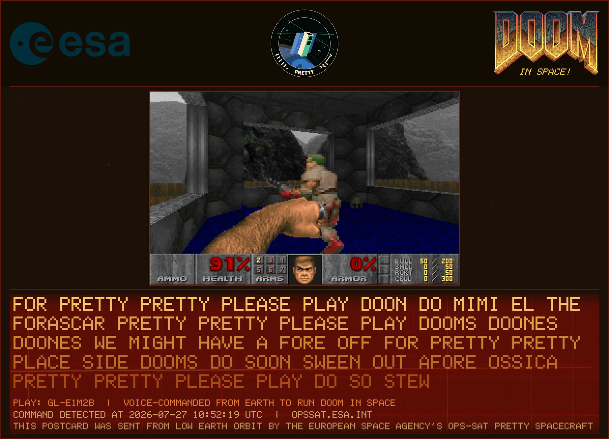
pack-4023, morning run 00001 of 27 July. The archived file is reproduced without reprocessing, the onboard BMP having been converted to PNG only. The copy shown here is a WebP rendering at 1 848 px, served in place of a 1.0 MB download; the full-size PNG opens when the image is clicked, and may be downloaded directly: postcard_capture-001_OPS-SAT-PRETTY.png (2 520 × 1 820, 1.0 MB).{kind=link}
gl-e1m2b, frames 480–540, produced by DOOM running aboard OPS-SAT PRETTY and downlinked after the successful command. Animation plays in the HTML edition; a representative frame is shown when printed.Source: generated onboard OPS-SAT PRETTY and downlinked in experiment package pack-4023, morning run 00001 of 27 July. The frames are exactly as received. For this report the downlinked GIF has been transcoded to H.264 video at identical resolution, frame count and frame rate, to spare the reader a 2.6 MB download; the original is retained and may be downloaded here: gameplay_capture-001_gl-e1m2b_OPS-SAT-PRETTY.gif.{kind=link}
The artifacts are deliberately redundant as evidence. The postcard joins the application image, the imperfect but recognisable onboard transcript, the experiment identifier and the UTC detection time in one spacecraft-generated product. The GIF independently shows the application executing rather than merely reaching its start condition. The demo statistics file goes further still, recording that the gl-e1m2b run completed E1M2 in 2:34 against a 1:15 par with 2 of 20 kills—trivial detail in itself, but proof that a full game engine ran to completion on the flight processor.
“NICE!!!! Congrats everyone, we managed to demonstrate voice commanding a spacecraft! A first in satellite mission operations!”Georges Labrèche, Tanagra Space — email to the project team, 27 July 2026, 19:44 CEST
9.7 Attribution of cadence, and what the data cannot settle
Both keyer variants were used within the same pass, the normal file first and the extra-pause file after approximately 12:52 CEST. It is tempting to attribute captures 4 and 5 to the extra-pause cadence on timing alone, and the operator record is consistent with that reading. The evidence does not support stating it as fact.
An attempt was made to settle the question from the audio itself, by comparing the burst statistics of the downlinked captures against the two reference files. The reference cadences differ measurably—1.51 versus 1.82 bursts per second—but the successful captures measured 1.55, 1.60 and 1.45 bursts per second, all closer to the normal file. That result is not conclusive, because burst detection on the recovered audio operates at 12–15 dB speech contrast against 21–26 dB for the clean references, and the noise systematically merges and suppresses short bursts, biasing the measured rate downward. The measurement can neither confirm nor exclude the extra-pause file on captures 4 and 5.
Readers of the HTML edition are in a position to form their own impression: the two keyer files as transmitted are in Section 6.7 and the recovered captures in Section 9.5. An informal listening comparison is worth making, but it should not be mistaken for the measurement above, which remains inconclusive.
9.8 Interpretation
A 50% capture-level success rate understates the result. Of the three failures, two were caused by loss of the uplink at the ground station and one by recognition margin; none was caused by the flight DSP, which behaved correctly in all six captures and recovered intelligible speech from every capture that contained a signal. Reframed by cause, the onboard chain succeeded on three of the four captures that actually received the uplink.
More importantly, the campaign’s central design bet was validated under conditions it was designed for rather than in the laboratory. Repetition, fuzzy matching, voice diversity and bandwidth narrowing were each introduced to address a specific identified failure mode, and the flight log shows each of them doing its job: not one exact DOOM was recognised in the flagship capture, and the command was nevertheless detected.
capture-metrics.csvcapture.sc16logged per capture
capture.wavdownlink
postcard.pngstats.txtscores.txttranscription.txtpack-4023 rather than by inference from the stage on either side of it: the link by the I/Q statistics, the narrowing by its logged frequency estimate, the recogniser by its transcript, the matcher by its score file, and the application by its own level statistics. Compare Figure 2, which shows the same chain as designed.Source: diagram prepared for this report by LA4O from experiment package pack-4023.Evening pass: the live-microphone attempt
Within an hour of confirming the morning success, Tanagra Space proposed a more direct follow-on: transmit the command using the operators’ own voices rather than the pre-generated files. LA4O welcomed the idea. As LB9BJ put it, working with the microphone alone and no voice keyer would make the demonstration “truly with a human touch”. The second pass of 27 July was flown on that basis.
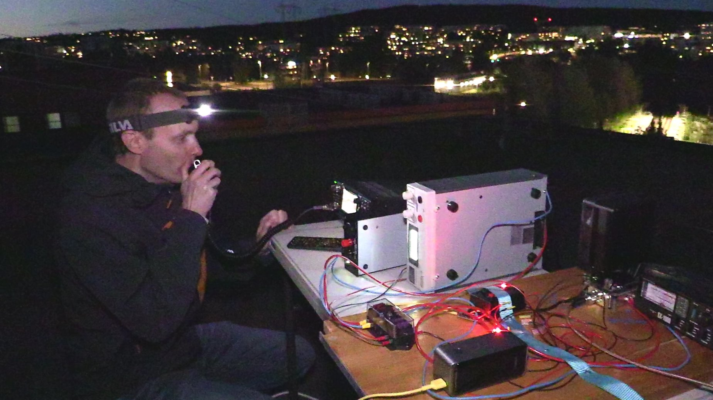
10.1 Why this was a harder test, by design
It is worth being explicit about what the evening pass gave up, because the decision is easy to read as a cosmetic one and it was not. Chapter 6 documents a deliberate engineering campaign to maximise recognition margin: twenty-nine voices screened, four selected specifically because they survived simulated FM degradation at approximately 12 dB carrier-to-noise ratio, stitched into a single keyer so that four different acoustic realisations of the phrase were presented within every capture, at a cadence measured and tuned to give the recogniser clean word boundaries.
Substituting a live human voice discards all four of those measures at once. It also reintroduces the specific problem that started the voice work: the flight recogniser is a small English transducer trained predominantly on standard US and British speech, and the 3 July captures had already shown that it handled the operators’ Norwegian-accented English poorly. The evening attempt therefore ran with materially less recognition margin than the morning attempt, and against a link geometry that was more demanding rather than less.
What was retained was the lexical design. The message transmitted was the same script as the DOOM keyer used earlier in July, with LA4O as the call sign — so the wake word, the repeated command ending and the identification were all preserved. Only the acoustic realisation and the cadence changed. That is the correct way to structure the comparison: one variable altered, the rest held constant.
10.2 Station and crew
Four operators attended: LA7IJ, LB0PI, LB5SK and LB9BJ — one more than had been planned when the evening was discussed that afternoon, and including LB0PI, who had last operated with the group during the 3 July campaign. LB9BJ was the transmitting operator for the entire pass, speaking live into the microphone throughout. The station configuration was otherwise identical to the morning: IC-9700 at 1296.000 MHz NFM, the PE1RKI XRF286S amplifier at 28 V, the SX-1000 in line, and the Helix23-2 on its tripod with manual azimuth tracking against the roof marks.
10.3 Pass record
| Time | Event |
|---|---|
| 23:32 | Satellite above the horizon (AOS). |
| 23:33 | Transmission started — live microphone, LB9BJ operating. |
| 23:36 | Antenna rotated. |
| 23:37 | Satellite reached maximum observed elevation, 66.9°. |
| 23:39 | Antenna rotated. |
| 23:41 | Satellite obscured behind the adjacent building and hillside — effective loss of signal. |
| 23:43 | Satellite below the true horizon. |
Three observations follow from that record. First, the transmission began one minute after acquisition and continued until the spacecraft was physically obscured, giving roughly eight minutes of continuous on-air time. ESA had scheduled the evening run for 21:36:56 UTC, that is 23:36:56 CEST. Applying the capture behaviour observed in the morning — the first capture beginning approximately nine seconds after the scheduled start and the sixth ending approximately 192 seconds after it — places the evening capture sequence between about 23:37:05 and 23:40:08. That interval falls entirely inside the transmission window and, by roughly a minute, ahead of the terrain blockage. On the ground-segment side the pass was covered.
Second, the effective end of the pass at 23:41 was set by the building and hillside, not by the horizon at 23:43. LB9BJ had identified this constraint ten days earlier when circulating pass predictions, noting that hills between west and north require perhaps 15° of elevation before the path is clear. Two minutes of a 69.9°-culmination pass were lost to local obstruction, which is a reminder that for a rooftop station the usable pass is defined by the local skyline rather than by the orbital geometry.
Third, maximum elevation was logged as 66.9° against the 69.9° given in the scheduling correspondence, and the two figures are not describing quite the same thing. The 66.9° came from Look4Sat on LB9BJ’s handset, GPS-synchronised and computing for the station itself at JO59kx, 59.9623° N, 10.907° E. The figures supplied by ESA were computed for the experiment’s target point, which Section 9.1 places at 59.914° N, 10.752° E in central Oslo — some 9.7 km away. Two observers that far apart do not see the same culmination, which accounts for part of the difference; the remainder is most likely down to differing orbital elements or propagators, and this report does not attempt to apportion it. The same effect presumably applies to the morning pass, where no independent elevation reading was recorded.
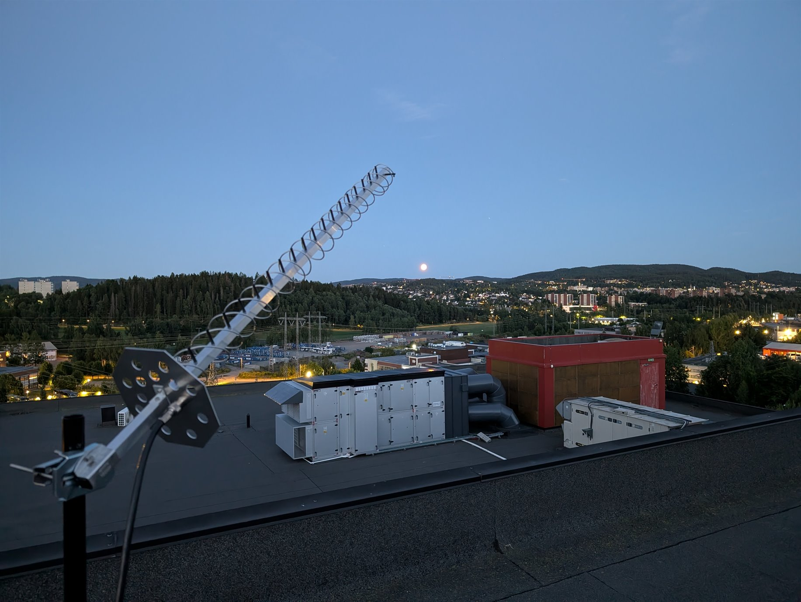
10.3.1 Observed simultaneously from 68° north
As on the morning pass, LB6AJ followed the evening attempt from Nordland, some 912 km north of Rommen. Figure 33 was taken at 23:40:33 CEST — inside the transmission window, and about a minute before the spacecraft was lost behind the building — looking west towards Hamarøy and the Lofoten peninsula, just short of 68° north.
The two photographs taken at the same moment are a small illustration of how much of Norway the pass spanned. At Rommen the crew were working by lamplight, unable to read chalk bearings drawn on the roof; 912 km to the north there was still enough light in the sky to photograph a landscape. The same spacecraft was overhead for both.
10.4 Operational notes
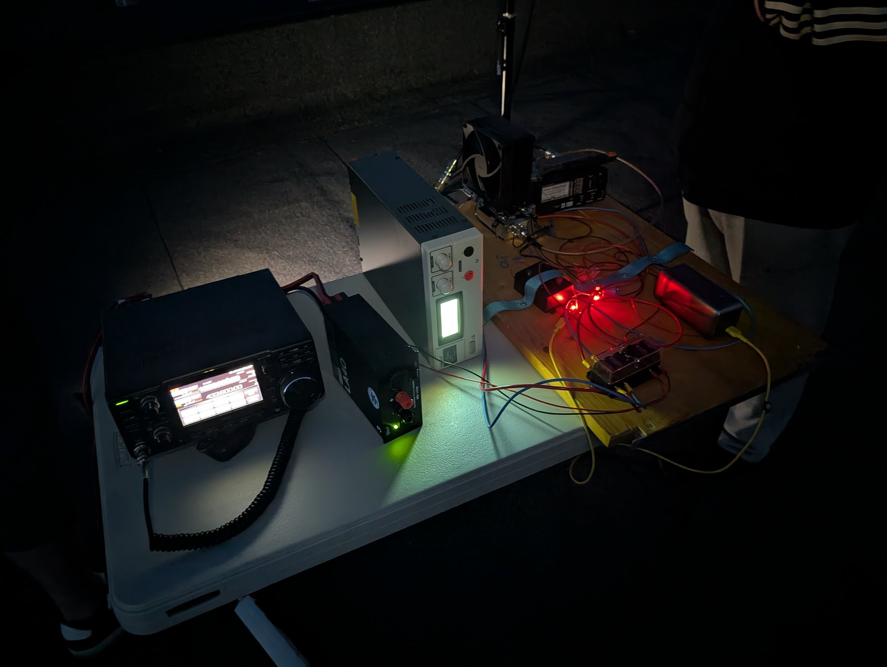
The crew reported no significant problems. Two practical factors are worth preserving. The pass ran in darkness, which complicates manual azimuth tracking against chalk marks drawn on the roof — a technique that had worked well in daylight on 3 and 27 July and which depends on the operator being able to read the marks. Any future night operation should provide illumination for the bearing references, or replace them with a method that does not require reading a mark on a roof surface.
The one fault encountered was a power cable making poor contact. It was traced to a Powerpole connector in which the contact shoe had not been fully seated in the housing. This is a well-known failure mode of that connector family: a shoe that is not pushed home until the retaining spring latches will still allow the housing to mate, will still pass current, and will present as an intermittent or resistive joint under load. It was found and corrected without consequence, but it is precisely the class of fault that is difficult to diagnose in the dark and under time pressure, and it has been added to the pre-pass checklist in Appendix C.
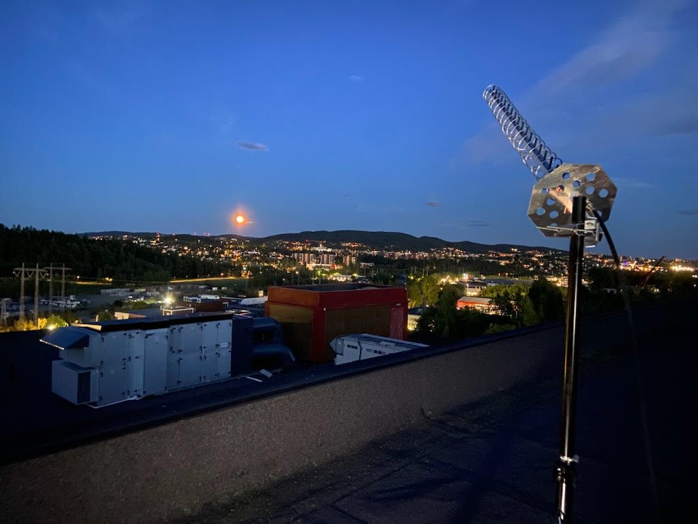
10.5 Spacecraft result
The evening pass succeeded. Capture 2 detected the command and launched DOOM, and it did so on a live human voice with no keyer, no synthetic speech and no wake word — on a pass during which the spacecraft was not pointing at the ground station at all.
10.5.1 The spacecraft was not pointing
Experiment 4023 started at 21:36:56 UTC and terminated at 21:40:32, a run of 212.8 s against the morning’s 304.1 s. The flight configuration was byte-for-byte identical to the morning: same narrowing parameters, same recogniser, same matcher, same demo cycle. Only the audio source on the ground had changed.
What was not identical was the spacecraft. Its attitude determination and control system had not been switched on, so the scheduled target pointing was never executed. The attitude the spacecraft actually held during the pass is not known to the group, and this report does not assume it. What is on record is that the intended pointing did not happen and that reception nevertheless occurred, which Tanagra Space attributed plainly to luck:
“This time around the spacecraft had some ADCS problems (it wasn’t turned on) so the scheduled target pointing was not executed BUT it looks like luck was on our side and at some point the spacecraft’s position was just right to capture at least 8 seconds of broadcast that detected the command to run DOOM!”Georges Labrèche, Tanagra Space — email to the project team, 28 July 2026, 14:04 CEST
10.5.2 Capture record
| # | Peak found | I/Q RMS | Transcription | Wake / DOOM | Outcome |
|---|---|---|---|---|---|
| 1 | +10.30 kHz | −48.5 dBFS | AND COME ON BEFORE HIM | 0 / 0 | No command |
| 2 | −2.00 kHz | −48.3 dBFS | AND FAR BRIEFLY PLAYING DOOM STEAM DOOM PRECIPATED | 0 / 2 exact | DOOM launched |
| 3 | +13.13 kHz | −52.4 dBFS | AND SOUL | 0 / 0 | No command |
| 4 | +12.65 kHz | −49.9 dBFS | AND | 0 / 0 | No command |
| 5 | +12.35 kHz | −52.4 dBFS | SO | 0 / 0 | No command — capture truncated to 4.0 s |
| 6 | — | — | — | — | Empty; narrowing, normalisation and all spectral products failed on a zero-length file |
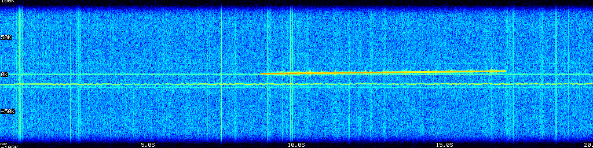
pack-4023, evening run 00001 of 27 July. Reproduced without reprocessing; BMP products converted to PNG only.Captures 5 and 6 hit the 50 s acquisition timeout as the spacecraft left the usable geometry, and the run wound down rather than completing. Capture 2’s peak offset of −2.00 kHz places it essentially at zero Doppler, consistent with its 23:37:31–23:37:52 CEST window falling across the 23:37 culmination.
LISTEN · THE EVENING CAPTURES
The five recovered captures of the evening run. Capture 2 is the one that mattered: Tanagra Space described it as surprisingly clear from about the eight-second mark, and it is the only capture in the entire campaign in which the recogniser produced the word DOOM exactly as spoken.
10.5.3 Two exact matches
The transcript of capture 2 reads in full:
AND FAR BRIEFLY PLAYING DOOM STEAM DOOM PRECIPATED Wake word (PRETTY) exact 0 approximate 0 Command [DOOM] exact 2 approximate 0 [DOOM, DOOM] Total points: 4 (exact=4, approx=0) Result: COMMAND DETECTED - launching DOOM
Two things stand out, and they point in opposite directions. The wake word was lost completely — not recognised even approximately, the recogniser rendering it somewhere in “AND FAR BRIEFLY”. And yet the command itself came through exactly, twice, with no fuzzy matching required.
DOOM across captures 1, 4 and 5, the matcher accepting DOON, DOOMS and DO. The evening pass inverts that completely. A live human voice, transmitted once through the same chain, produced the only two exact DOOM tokens the spacecraft recognised in either pass.10.5.4 Onboard artifacts
Detection occurred at 21:39:04.360 UTC, 23:39:04 CEST. DOOM launched the same demo as the morning’s first success, gl-e1m2b, because the demo cycle restarts with each run, and completed E1M2 in 2:34 against a 1:15 par with the same two kills. A postcard was composited onboard at 2 520 × 1 800 px in 9.7 s.
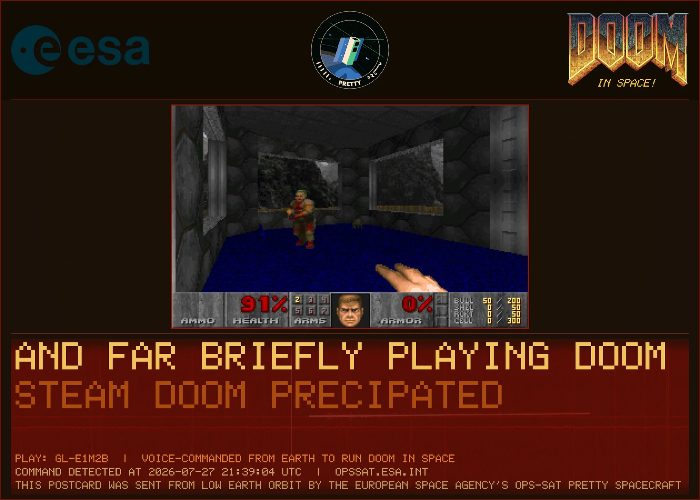
pack-4023, evening run 00001 of 27 July. The frames are exactly as received. The copy shown here is a WebP rendering at 1 848 px, served in place of a 1.7 MB download; the full-size PNG opens when the image is clicked, and may be downloaded directly: postcard_capture-002_OPS-SAT-PRETTY.png (2 520 × 1 800, 1.7 MB).{kind=link}
gl-e1m2b, frames 480–540, produced by DOOM running aboard OPS-SAT PRETTY after the evening command. Animation plays in the HTML edition.Source: generated onboard OPS-SAT PRETTY and downlinked in experiment package pack-4023, evening run 00001 of 27 July. The frames are exactly as received. For this report the downlinked GIF has been transcoded to H.264 video at identical resolution, frame count and frame rate, to spare the reader a 2.7 MB download; the original is retained and may be downloaded here: gameplay_capture-002_gl-e1m2b_OPS-SAT-PRETTY.gif.{kind=link}
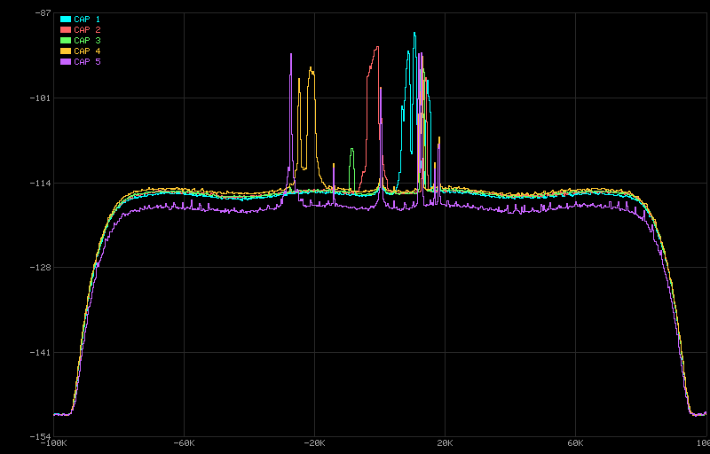
pack-4023, evening run 00001 of 27 July. Reproduced without reprocessing; BMP products converted to PNG only.10.6 What the human voice actually did
Section 10.1 argued that the evening attempt was a harder test by design, because substituting a live voice discarded four measures the campaign had built specifically to protect recognition margin. That argument was sound when it was made. The result contradicted it.
Tanagra Space’s own reading was that the processing pipeline appears to work considerably better on a real human voice than on the synthetic keyer. The evidence in this report is consistent with that, and it is worth being precise about what the evidence is and is not.
| Pass | Audio source | Captures detecting | Exact DOOM | Approximate DOOM |
|---|---|---|---|---|
| Morning | Four screened synthetic voices, repeated command ending | 3 of 6 | 0 | 13 across three captures |
| Evening | One live operator, spoken once per cycle | 1 of 5 | 2 | 0 |
What this supports. The synthetic voices were selected for survival through a simulated FM channel at low carrier-to-noise ratio, and they did survive — but only as damaged tokens that the fuzzy matcher had to rescue. The human voice, on a pass with worse geometry and no spacecraft pointing, produced clean tokens. If the effect is real, the likely explanation is that the screening optimised for the wrong thing: robustness of some acoustic energy surviving the channel, rather than the natural prosody, timing and spectral variation that a transducer model trained on human speech expects.
What this does not support. This is one capture. It is not a controlled comparison: the passes differed in geometry, elevation, spacecraft attitude, time of day and speaker, and the evening run produced five usable captures against the morning’s six. A single pair of exact matches is a strong hint, not a measurement. The honest position is that the campaign has generated a good hypothesis and no longer has an untested one — and that Chapter 12’s recommendation for controlled natural-voice trials has become considerably more interesting than it was when written.
10.7 Comparison with the morning pass
| Parameter | Morning pass | Evening pass |
|---|---|---|
| Scheduled experiment start | 10:50:53 UTC | 21:36:56 UTC |
| Predicted maximum elevation | 60.7° | 69.9° |
| Observed maximum elevation | Not separately logged | 66.9° at 23:37 CEST |
| Audio source | Two TTS keyer files from SD card | Live microphone |
| Voices presented | Four screened synthetic voices per cycle | One operator, LB9BJ |
| Cadence | Measured: 342–499 ms mean burst, ~210 ms gaps | Natural speech, not measured |
| Message content | Call sign, wake word, repeated DOOM ending | Same script, LA4O call sign |
| Transmission span | ≈12:45–12:58 (≈13 min) | 23:33–23:41 (≈8 min) |
| Pass terminated by | Local horizon | Building and hillside at 23:41 |
| Operators on site | LA7IJ, LB5SK, LB9BJ (+ LB6AJ remote) | LA7IJ, LB0PI, LB5SK, LB9BJ |
| Faults | Reversed PA connections; WAV encoding | Unseated Powerpole contact shoe |
| Illumination | Daylight | Darkness |
| Spacecraft attitude | Target pointing executed | ADCS off; no target pointing |
| Usable captures | 6 | 5 (the last two truncated as the run wound down) |
| Spacecraft result | Captures 1, 4, 5 detected — DOOM launched | Capture 2 detected — DOOM launched |
Exact DOOM tokens recognised | 0 | 2 |
Discussion and lessons learned
11.1 What worked
The strongest feature of the project was the short feedback path between ground operators and flight-software engineers. Raw I/Q and audio converted an apparent link failure into a diagnosable signal-processing problem. Independent reproduction in C++ and Python turned a promising offline result into credible flight code. Testing candidate voices through the exact ARM binary closed the gap between subjective audio quality and actual recognition.
11.2 What failed—and why it was useful
The delayed antenna cancelled an early attempt, the 10 June result yielded only noise, the 3 July audio initially sounded unusable, the PA lacked direct power measurement, and the first final-pass WAV files would not play. Each failure exposed a missing interface specification: logistics, receive bandwidth, measurement calibration or file encoding. The team’s progress came from making those interfaces explicit.
11.3 Operational discipline
Manual bias control was acceptable only because the arming order was documented and reinforced. The reversed RF connections found during setup show the value of a formal pre-power check. Likewise, a dummy-load test revealed meter uncertainty before the value entered the permanent record. These are small procedures with large risk-reduction effects.
11.4 General engineering insights
| Observation | Implication for future missions |
|---|---|
| Wideband capture does not imply wideband demodulation. | Preserve raw bandwidth for acquisition, then adaptively narrow before nonlinear FM discrimination. |
| Human intelligibility and model robustness differ. | Test prompts against the deployed recogniser and realistic channel impairment. |
| Repetition bridges uncertain capture timing. | Design phrase cadence jointly with recorder duty cycle and recognition segmentation. |
| Indicated power is not calibrated power. | Record the meter, range, cable topology and calibration checks with every claimed RF value. |
| Remote specialists can remain operationally decisive. | Pre-arrange file transfer, telephone support and a rapid verification channel. |
| An unconstrained peak search will confidently select a spur. | Bound the frequency estimator by physically achievable Doppler and reject candidates outside it; log the estimate and a confidence measure with every capture. |
| Fixed-elevation pointing fails exactly at culmination. | Match the elevation plan to the predicted maximum, or accept that the highest-elevation portion of a high pass may be the least reliable part of it. |
| The model, its quantisation and its decoder are an interface. | Pin the exact model artefacts as rigorously as a frequency or connector; “the same model family” produced materially different transcripts. |
| Any parameter varied within a pass must be timestamped. | Log switch instants against the same clock as the spacecraft capture windows, or the resulting comparison is unrecoverable after the fact. |
| The usable pass is bounded by the local skyline, not the horizon. | Survey obstruction bearings and elevations for the actual site and fold them into pass selection; the evening pass lost two minutes to a building and hillside. |
| Connectors that mate are not necessarily seated. | Powerpole-type contacts latch independently of housing mating. Tug-test each conductor during setup rather than diagnosing an intermittent joint under operational pressure. |
| Night operations invalidate daylight procedures. | Manual pointing referenced to marks drawn on a surface requires the operator to see them; provide illumination or a self-luminous alternative. |
11.5 What the flight data changed
Three conclusions in this report exist only because the complete experiment package was downlinked and analysed, rather than because the outcome was reported. First, the three unsuccessful captures had two distinct causes, and neither was attributable to the flight signal processing. Second, the morning captures separated cleanly by recovered speech contrast at a boundary close to the 12 dB criterion adopted for voice screening three weeks earlier — and the evening captures then showed that the correspondence was coincidental, the metric ceasing to track anything useful once the link degraded. A single pass would have left that reading unchallenged. Third, the successful detections were carried entirely by approximate token matches. Each of these is actionable for a future campaign in a way that “three of six captures triggered” is not.
The general point is that a successful demonstration produces its most valuable engineering content only if the underlying instrumentation is preserved and examined. The PRETTY DOOMed experiment logged its frequency estimate, its I/Q statistics, its spectral products, its transcripts and its per-token scores for every capture including the failures — and it is the failures, fully instrumented, that carry most of the transferable engineering.
11.6 A ground station for commanding a spacecraft need not be complicated
If this report has one conclusion likely to be useful to other groups, it is this. Nothing in the Rommen ground segment was specialised, custom-fabricated or expensive by the standards of institutional space operations, and the parts that might be assumed essential — automatic tracking, a calibrated laboratory, precision pointing, transmit Doppler correction — were either absent or proved unnecessary.
| Function | Conventional assumption | What LA4O actually used |
|---|---|---|
| Antenna pointing | Az/el rotator under computer control, closed-loop against a tracking program | Manual azimuth by hand; fixed elevation; bearings drawn on the roof in coloured chalk sold as a children’s toy |
| Pass prediction and tracking | Dedicated tracking software driving the rotator and transceiver | Mobile-phone applications (Look4Sat, n2yo) and a handheld magnetic compass |
| Transceiver | Purpose-built or laboratory-grade uplink exciter | A stock commercially available Icom IC-9700 — not the cheapest amateur transceiver, but mid-range among current multi-band sets |
| Power amplifier | Commercial or institutional PA with a calibration certificate | A €155 single-stage amateur amplifier bought from an individual constructor, PE1RKI (Section 4.2) |
| Antenna | Custom high-gain aperture | An off-the-shelf Wimo Helix23-2, ordered from a supplier familiar to radio amateurs worldwide |
| Mechanical integration | Rack-mounted, enclosed, EMC-controlled assembly | Components screwed to a wooden board, labelled in marker pen, carried up by hand (Section 4.4) |
| Transmit Doppler correction | Continuous frequency pre-compensation across the pass | None. Fixed carrier at 1296.000 MHz throughout |
| RF measurement | Traceable, calibrated instrumentation | A field SWR/power meter of unestablished calibration, in series with an interconnect rated only to 30 MHz (Section 4.5) |
The point is not that these substitutions were ideal — several are criticised elsewhere in this report and appear in the future-work recommendations of Chapter 12. The point is that they were sufficient, and that a group which had none of the conventional infrastructure nevertheless closed the link with margin to spare. The barrier to participating in this kind of experiment is lower than it appears from the outside.
Two factors made the improvisation viable. The first is link-budget overhead: an indicated 80 W into 15.1 dBi produced a signal strong enough that the recovered audio on the successful captures stood 13–15 dB above the residual noise, which is what allowed crude pointing and an uncalibrated feed path to be absorbed without consequence. Generous margin is what buys tolerance for everything else being approximate. The second is that the difficult work was moved off the ground station entirely — into analysis, and into the spacecraft.
11.7 Doppler: a requirement that dissolved
Early in the campaign it was suggested that the ground station should compensate for Doppler shift on transmit. For a manually operated station this would have been a significant burden, requiring either computer control of the transceiver or an operator retuning continuously through the few minutes that mattered most.
It proved unnecessary, and the flight data now demonstrates why rather than merely asserting it. The spacecraft receiver presents 350 kHz of analogue bandwidth, comfortably wider than the roughly ±32 kHz excursion of a 1296 MHz uplink from low Earth orbit, so the signal never left the passband. The narrowing stage added in July then located the carrier by peak search within ±100 kHz and shifted it to baseband before demodulation — which means the onboard processing was already performing, autonomously and per capture, exactly the frequency correction the ground had been asked to provide.
The evidence is explicit. LA4O transmitted on a fixed carrier throughout; photographs of the transceiver taken at 11:37 and again at 12:58 CEST on 27 July both show 1296.000 MHz with no offset applied. The onboard peak-search log for that pass records offsets running from +8.96 kHz through −32.35 kHz (Table 14), and the three captures that detected the command include the one at −25.10 kHz. A 34 kHz Doppler excursion was tracked and removed onboard, with no ground-side compensation of any kind.
11.8 What the work was, in amateur-radio terms
For the LA4O members involved, this was a first. Several had worked satellites before, through amateur transponders and repeaters, but with different equipment and a different objective — establishing contacts rather than causing an onboard action.
The distinction is worth drawing precisely, because commanding is not foreign to amateur practice. Operators have accessed terrestrial repeaters for decades by sending a 1750 Hz tone burst: a deliberately chosen audio signal, transmitted to a remote unattended station, which is expected to recognise it and change state. That is a command in every meaningful sense, and it is entirely routine.
What changed here is the two ends of that familiar transaction. The signal was not a single fixed tone but speech, carrying meaning that had to survive an FM channel and be recovered by an acoustic model rather than a filter. And the remote station was not on a hilltop but in orbit at 520 km, moving at 7.6 km/s, reachable for eight minutes at a time. Seen this way the experiment is a natural extension of something amateurs already do, stretched across a far more demanding channel — which is precisely why an amateur group was a reasonable partner for it.
Future work
12.1 Ground segment
A permanent PTT/bias sequencer should guarantee that bias precedes RF and remains applied until after unkeying. A calibrated elevation fixture and repeatable azimuth scale would reduce pointing workload, and the fixed-elevation compromise should be revisited: Chapter 9 attributes the loss of two captures to the spacecraft passing above a beam set for a lower culmination, and a single adjustable elevation stop indexed to the predicted maximum would address it without the cost of a rotator. An obstruction survey of the Rommen roof, recording bearing and elevation of the surrounding buildings and terrain, would let pass selection account for the local skyline that ended the evening pass two minutes early. The amplifier board described in Section 4.4 should be rebuilt as a designed assembly: fuse distribution and bias controller in a common guarded enclosure, the cooler bolted rather than hose-clamped, cable runs dressed and bundled, and the whole on a purpose-cut plate. The hand-written functional labelling should be retained in printed form — it earned its place — and the carrying handle should survive the redesign. Cable and adapter loss at 1296 MHz should be measured with calibrated equipment, and the SX-1000 compared against a traceable reference; without that, no calibrated EIRP figure can honestly be claimed.
12.2 Adaptive DSP
The peak-search approach can be extended to track frequency continuously, estimate confidence and adapt channel width to observed occupied bandwidth. Capture metadata should preserve detected offset, signal level, filter settings and timing so unsuccessful recognitions can be reconstructed without ambiguity.
12.3 Command experiments
The first natural-voice trial was flown on the evening of 27 July, succeeded, and produced the only exact command tokens of the campaign (Section 10.6). That makes the follow-on work more pointed rather than less. Natural-voice trials should compare multiple operators, accents, pacing and live microphone levels against the same standard phrase, and — critically — should record the cadence actually transmitted so that it can be compared against the measured keyer cadences in Chapter 6. A useful intermediate experiment would have an operator deliberately imitate the extra-pause cadence, separating the effect of accent from the effect of articulation. The single most valuable test would be the controlled one the campaign never ran: the same operator and the same synthetic keyer alternated within one pass, with the switch instants logged, so that the human-versus-synthetic question raised in Section 10.6 is answered by measurement rather than by comparing two passes flown under different conditions. Digital and hybrid modes could provide a controlled reference alongside speech, and a geographically distributed campaign would test repeatability across equipment and propagation geometry.
12.4 Proposals from the flight side
Following the evening pass, Tanagra Space put three further steps to ESA, and they are recorded here because they define what a continuation of this experiment would look like.
The first is a repeat run that retains the sc16 raw I/Q for downlink rather than deleting it after artifact generation, which would allow the kind of ground re-analysis Chapter 5 depended on to be applied to a successful pass rather than only to a failed one. The constraint is downlink volume, so capture length would have to be reduced in exchange.
The second is the substantive one: extending the command vocabulary so that a recognised phrase acts on an actual spacecraft payload — the example offered was “PRETTY TURN OFF SDR”. That would move the demonstration from running an application to operating the spacecraft, and it is the step that would make voice a genuine control interface rather than a trigger. It is also the step most likely to meet resistance, for the obvious reason that a spoken command which reconfigures a subsystem carries consequences that a spoken command which starts a game does not.
The third is to evaluate larger speech models for better transcription. Because these are substantially bigger than the 27 MB quantised model currently flown, memory exhaustion is a real risk, so the work would be confined to the flatsat and engineering model in ESA’s laboratory before any flight consideration.
12.5 Education and reuse
The experiment is well suited to university teaching because it spans link budgets, RF power electronics, antenna pointing, sampling theory, speech recognition, embedded software and operations. Publishing reproducible audio impairments, anonymised I/Q excerpts and the flight test harness would allow student teams to evaluate alternative algorithms before future passes.
A complete engineering demonstration
The wider PRETTY DOOM project team demonstrated that spoken amateur-radio audio could command an orbiting spacecraft and trigger a visible onboard application. LA4O contributed the Oslo ground station, operators and part of the RF/DSP investigation to that shared result.
Both passes of 27 July succeeded. The morning demonstrated the engineered path: screened synthetic voices, a repeated command ending and a fuzzy matcher, on a pass flown to plan. The evening demonstrated something the engineering had not predicted — an operator speaking live, on a pass where the spacecraft never executed its scheduled pointing, recognised exactly.
The result emerged from accumulated evidence rather than a single fortunate transmission. The ground station achieved useful EIRP with accessible equipment; the 3 July captures proved the RF path; analysis identified the mismatch between channel width and signal occupancy; flight-software changes recovered intelligible audio; model-specific voice testing produced robust commands; and disciplined final-pass operation delivered a sustained, measured uplink. On 27 July, captures 1, 4 and 5 detected the trigger and ran DOOM.
The lasting contribution is therefore broader than DOOM itself. The project demonstrates a practical method for developing unconventional spacecraft interfaces: instrument the full chain, retain raw evidence, test the deployed implementation, and treat ground hardware, RF propagation, DSP, machine inference and operator procedure as a single system.
It also demonstrates something about who can do this work. The Oslo ground segment was a commercially available transceiver, an amplifier bought from an individual constructor for €155, a catalogue antenna, a wooden board, a handheld compass and coloured chalk. There was no rotator, no calibrated laboratory and no transmit Doppler correction. What the group contributed that could not be bought was the analysis: taking the I/Q recordings ESA returned after 3 July, finding the bandwidth mismatch in the receive chain, and testing candidate voices against the exact speech model carried in orbit. The difficult engineering was moved off the roof and into the signal processing, which is where it belonged.
Closing remarks
Reports of this kind normally end at the last measurement, and the preceding chapters have been written to that standard. It would nonetheless be an incomplete record if it did not note what the work was like for the people who did it.
The rhythm of the experiment was unfamiliar even to experienced operators. The station would transmit into an apparently empty sky for a few minutes, pack up, and then wait — for hours, sometimes until the following day — for an email from Darmstadt or from Tanagra Space saying what, if anything, the spacecraft had heard. One participant described the sensation as being like waiting for Christmas as a child. The 19:44 message of 27 July, opening “Holy moly, it WORKED!”, arrived at the end of one such wait.
The project was carried out by volunteers, in their own time, with borrowed and self-funded equipment, around work and family and summer holidays. It succeeded through group effort and an appetite for experiment — and, as the participants would put it themselves: they made it. They had fun, made memories, and made a little history.
A personal note
Reports of this kind are written in the third person for good reasons, and this one has kept to that. I would like to break it once, at the end.
I grew up in the nineteen-eighties and nineties, when home computing and the games that came with it were new enough to feel like a frontier. An Amiga 500 first, then a PC, then whatever a friend had in the corner of a living room. Each new title arrived as a small event, and what arrived with it was not only a world to move through but a sound to hear. DOOM was part of that, for me as for a great many people of my generation, and the reason it is still being ported to unlikely hardware thirty years later is that it left a mark on the people who first played it.
Two weeks into this project we learned that Bobby Prince had died, on 16 June 2026. He wrote the music and much of the sound design for DOOM, and for other titles from id Software and 3D Realms that shaped the same years. I can still hear it: that music coming out of a friend’s computer, and cutting across it the sound no one who played DOOM has ever quite forgotten — the chainsaw. It was thrilling then and it is thrilling now, and it is inseparable from what the game meant to us. If this experiment amounts to anything beyond the engineering recorded in the preceding chapters, let it stand in his honour.
And there is a thought I have not been able to put down since the morning of 27 July. The transmission was aimed at a spacecraft 520 km overhead, but a radio wave does not stop where it is pointed. Most of what left the helix that day missed the satellite entirely and is travelling still, spreading outward at the speed of light, carrying a Norwegian club call sign and a polite request to play DOOM. Whether anything, or anyone, out there is listening is not a question this report can answer. But should some receiver on a distant moon one day resolve it, the instruction will at least be unambiguous — and there would be a certain symmetry in it, given where DOOM begins.
— LB6AJ, Eskil Hadland, Oslogruppen av NRRLDay-by-day engineering log
This dated record preserves the chronology behind the analytical chapters. It records the Oslo group’s activity and the external information received by the group; it is not a complete operations log for the wider spacecraft project.
| Date | Activity, decision and result |
|---|---|
| 29 May | At 23:34 an enquiry arrived through the public contact form on la4o.no from Ólafur Waage, a software developer working with ESA on the OPS-SAT programme. It described the 2023 OPS-SAT-1 DOOM demonstration, noted that OPS-SAT PRETTY carries radio equipment and can therefore listen, and proposed that radio amateurs transmit a spoken “PRETTY, play DOOM” to the spacecraft. A ten- to twenty-minute video call was requested. |
| 30 May | The enquiry was forwarded to the LA4O board by the club secretary, with the suggestion that someone might like to take up the opportunity. |
| 1 June | LA4O replied shortly after midnight, noting that the club had members active on satellites at S-band and below and that equipment should therefore not be the obstacle. Ólafur was invited to join the board meeting the following evening by video call. |
| 2 June | Ólafur Waage joined the LA4O board meeting by video call at 18:30 and presented the experiment; the board agreed to take part. The initial brief called for NFM transmission on 1296.000 MHz during timed passes. LA4O already had an Icom ID-1 capable of 10 W at the club station. |
| 3 June | LA7WRA gathered spacecraft tracking and ten-day pass information and compared Wimo antenna options. The 15.1 dBi Helix23-2 offered approximately 2 dB more gain than the 13 dBi Helix23. An early ground-side requirement of about 49 dBm EIRP was identified. |
| 4 June | The Helix23-2 was ordered from Wimo. LB6AJ ordered the 75 W XRF286S amplifier from Bert Modderman, PE1RKI, in the Netherlands for approximately €155 including shipping, having found it on his website after comparing self-build, surplus conversion and unbranded module options; price and availability were the deciding factors, ahead of ease of use. The team identified the 28 V, approximately 5.5 A supply requirement and began evaluating safe drive from the ID-1. |
| 6 June | Ólafur circulated detailed pass opportunities for 9–10 June and recommended transmission throughout the available windows rather than only at a single instant. |
| 8 June | The LA4O roof at Nedre Rommen, approximately 160 m above mean sea level, was selected as the primary site. Stovnertårnet was considered but maintenance closures made it less reliable. LA7WRA prepared an azimuth/elevation plan. Because the helix beamwidth was approximately 30°, the team chose fixed elevation with manual azimuth tracking. LB6AJ outlined a bias-before-transmit controller. |
| 9 June | Regional holidays delayed antenna shipment; LA4O could not proceed with the intended attempt. |
| 10 June | The experiment ran on the spacecraft side, but the result available to the group was noise only. No intelligible LA4O signal was identified and the cause remained open. |
| 15 June | The Helix23-2 arrived in Oslo after courier problems. The station could now operate barefoot at 10 W with the ID-1. The PA cleared customs, and 3 dB plus 1 dB, 25 W attenuators were available for an ID-1 driver chain. LA4O offered support in debugging the GNU Radio receive/DSP path. |
| 17 June | LA4CIA joined the group’s project coordination. |
| 30 June | After a gap week, ESA proposed 3 July. The next activity was reframed as a detection and localisation test: a continuous carrier or repeated voice would be preferable to sending only the final command. |
| 1 July | Member availability was confirmed. Cooling work was assigned using a CPU cooler and jubilee clips on the CNC-machined PA enclosure. LB9BJ prepared Look4Sat tracking, and LB5SK confirmed participation with the IC-9700. |
| 2 July | Two Oslo-focused passes were confirmed. ESA requested antenna polarisation and continuous-transmission timing around maximum elevation. LA4O confirmed RHCP-only operation and prepared to cover the full recording intervals. |
| 3 July | Six LA4O participants assembled at Rommen. Chalk azimuth bearings were drawn directly on the roof. Pass 1, with 12.1° maximum elevation, used the IC-9700 barefoot. Pass 2, with 53.9° maximum elevation, used the PE1RKI PA conservatively backed off for its first on-air operation. The station transmitted near-continuously and identified as “lima alfa four oscar.” |
| 4 July | LA4O sent its attempt report to Ólafur. The first PA field use showed plausible supply current, low temperature and no fault, although RF output had not yet been directly measured. |
| 6 July | ESA supplied onboard audio from the low-elevation first pass, proving that the LA4O signal reached PRETTY. LB6AJ returned a Doppler-corrected and processed version the same evening. |
| 7–9 July | The sc16 flight I/Q capture, Georges Labrèche’s denoised audio and the wider recording set were shared. LB6AJ used numpy/scipy processing to recover recognisable voice from both pass datasets. Tanagra tested the denoised files through the onboard STT pipeline as a counterfactual evaluation. |
| 10 July | LB6AJ sent the receive-chain root-cause analysis and channel-narrowing proposal to Georges as an explicit KEEP/ADD annotation of the existing flowgraph, estimating a 9–11 dB noise-bandwidth reduction; Georges accepted it for implementation the same day and noted that the narrowing sits entirely post-capture, so it required no change to ESA’s capture logic. He also raised the possibility that the uplink had been SSB rather than FM; LB6AJ resolved this from a photograph of the transceiver display taken during the second 3 July pass. A model-identity discrepancy was traced the same evening: LA4O had been screening against the larger non-small Zipformer variant with a different token set, and adopting the exact small-model files brought ground and flight transcripts into agreement. Systematic screening of 29 Piper voices against the correct model followed, and by 22:17 the four survivors of simulated FM degradation at 12 dB CNR had been identified. |
| 11 July | A holiday-period technical handover added LB9BJ to the processing thread. LA4O documented PA operation at 28 V, bias-before-TX discipline, target drain current and a minimum crew based around LB5SK and LB9BJ. |
| 13 July | Georges reproduced the signal-narrowing method in C++ GNU Radio and cross-checked it against an independent Python implementation that agreed. Peak search, frequency shift, filtering and decimation recovered speech, and the logged offset was noted to double as a Doppler measurement. Running the four shortlisted voices through the full flight chain initially ranked them differently from LA4O’s bare-model results; the discrepancy was traced to a redundant second audio-filtering pass before the recogniser, which was then removed. Georges also flagged that two of the 12 dB triggers had matched on a single fragile token, reinforcing the case for a repeated command ending. |
| 14 July | The flight software was updated with both fixes and tested locally, then all eight shortlisted TTS files—four clean and four degraded to approximately 12 dB CNR—were replayed through the flight executable compiled for the spacecraft’s ARM processor. All eight triggered DOOM. The transcripts confirmed the design intent: where noise turned DOOM into DOON or DOONE, at least one clean token survived in every file. Georges suggested, explicitly without supporting evidence, that longer pauses between DOOM repetitions might improve recognition — the hypothesis that later produced the extra-pause keyer file. The team established that 3 July had mainly used FIL1 wide FM and selected FIL3 narrow FM for future attempts. |
| 17 July | Vladimir Zelenevskiy of ESA joined the coordination thread to assist with pass planning. LB6AJ, travelling in northern Finland, undertook to produce a revised keyer file with additional spacing. |
| 15 July | The group compared a Bird element system with broadband 23 cm power/SWR meters. A Komunica SX-1000 or equivalent was selected as a more generally useful laboratory instrument, and LA7IJ undertook the purchase. |
| 17–20 July | LB9BJ supplied availability and pass predictions; LB5SK confirmed availability given notice. LB6AJ continued TTS and keyer work while travelling and reiterated the PA limits: 28 V, target about 5.65 A and never exceed approximately 5.8 A. |
| 23–24 July | Four candidate passes were circulated. LB9BJ and LB5SK selected both 27 July opportunities. Georges arranged windows centred at 10:51:54 and 21:37:57 UTC, with maximum elevations of 60.7° and 69.9°, subject to final ESA confirmation. |
| 26 July | The Oslo group received the two planned local pass times, 12:51 and 23:37 CEST, and was asked to arrive at least one hour early for setup and testing. |
| 27 July, 01:50–01:54 | LB6AJ, still north of the Arctic Circle, supplied the two keyer files stitched from the four shortlisted voices, noting that the slowed version had added spacing before each DOOM. Four minutes later Georges confirmed ESA scheduling of both runs at 10:50:53 and 21:36:56 UTC, targeting ECEF 3149143.1, 598008.8, 5495694.5 m — 59.914° N, 10.752° E, central Oslo — and confirmed that this time the DOOM experiment itself would run rather than ESA’s capture pipeline alone. Vladimir Zelenevskiy confirmed the passes at 07:19. |
| 27 July, morning setup | LA7IJ, LB5SK and LB9BJ assembled at Rommen while LB6AJ supported from Steigen. The SX-1000 was checked into a dummy load. Reversed PA input/output connections were caught before power-up. Incompatible initial WAV files were corrected remotely and confirmed working by SMS. |
| 27 July, 12:45–12:58 CEST | The normal TTS keyer began first, followed around maximum elevation by the extra-pause version. Operators manually tracked azimuth. The station maintained 28 V and approximately 5.5 A with about 80 W indicated output throughout the pass. |
| 27 July, 16:41 CEST | Vladimir Zelenevskiy reported nominal spacecraft operation during the morning pass. LB9BJ replied with the ground-side status, power indication and confirmation that both TTS files had been used. |
| 27 July, 12:50:53–12:56:00 CEST | Aboard the spacecraft, experiment 4023 ran as PRETTY DOOMed v7. Six 20 s captures were taken between 10:51:02 and 10:54:05 UTC, each narrowed, normalised and transcribed in the background. Captures 1, 4 and 5 detected the command and launched DOOM demos gl-e1m2b, e1m7-607 and gl-e1m2 respectively, each generating a postcard and an animated frame range. The run completed in 304.1 s. |
| 27 July, 19:44 CEST | Georges Labrèche reported that captures 1, 4 and 5 had detected the trigger and run DOOM. Captured audio, a transcription postcard and gameplay imagery were returned as evidence, with the complete artifact package made available for download. He described the result as a demonstration of voice commanding a spacecraft and proposed live human voice for the evening pass. |
| 27 July, 23:36:56 UTC | Aboard the spacecraft, experiment 4023 ran again. Attitude control had not been switched on, so the scheduled target pointing was never executed. Five usable captures were taken; capture 2 detected the command at 21:39:04 UTC with two exact matches of the word DOOM and launched demo gl-e1m2b. The run completed in 212.8 s. |
| 28 July, 14:04 CEST | Tanagra Space reported the evening result and the ADCS problem, described the recovered audio as surprisingly clear from the eight-second mark, and observed that the processing pipeline appears to perform considerably better on a real human voice. Three follow-on steps were put to ESA; they are recorded in Section 12.4. |
| 27 July, 23:32–23:43 CEST | Second pass flown from Rommen by LA7IJ, LB0PI, LB5SK and LB9BJ. All transmissions used the live microphone with LB9BJ operating throughout; the spoken message followed the same script as the July DOOM keyer with LA4O as the call sign. Transmission ran from 23:33 until the spacecraft was obscured by the adjacent building and hillside at 23:41, two minutes before true horizon. Maximum elevation was logged as 66.9° at 23:37. The station was otherwise configured exactly as in the morning. The only fault was an intermittent power cable, traced to a Powerpole contact shoe that had not been fully seated in its housing. No spacecraft artifact package for this pass had been received by the group at the time of issue. |
| 27–28 July | The engineering report was written by LB6AJ from the project correspondence, the operators’ logs and photographs, and the downlinked experiment packages, and sent to LB9BJ for proof-reading. Its method of preparation is set out in the colophon. |
| 29 July | The draft was proof-read by LB9BJ, who corrected the account of the coaxial interconnect — it had been moved between the transceiver and the amplifier when the reversed PA connections were found, and was therefore in the path on 27 July as well — and explained the elevation discrepancy of Section 10.3. |
| 30 July | Bert Modderman gave permission for his amplifier schematic to be reproduced. Georges Labrèche circulated a draft of his own write-up of the experiment. Final corrections were made, the report was issued as version 1.0, and the document was prepared for publication as a static site. |
All dates are in 2026. The 3 July source thread initially mixed local time and UTC; the confirmed pass maxima were 19:25:13 and 20:58:06 UTC, approximately 21:25 and 22:58 CEST in Oslo.
Source record
- Ólafur Waage, enquiry submitted via the LA4O public contact form, 29 May 2026, 23:34; forwarded to the club board 30 May and answered 1 June. Origin of the LA4O participation, described in Section 1.3.
- “Perverst dataspill sjokkerer,” Fedrelandsvennen, 9 March 1994 — contemporary Norwegian press reaction to DOOM, recounted at spillhistorie.no (6 August 2024) and revisited by NRK’s games programme NERD (NRK2, 2004). Cited in Section 2.5.
- Joe Wilkins, “Hacker Gets ‘Doom’ Running on Satellite in Outer Space,” Futurism, 31 October 2025 — coverage of the OPS-SAT-1 DOOM demonstration that preceded this experiment, cited in Sections 2.3 and 2.6.
- “How a programmer got Doom to run on a space satellite — and what happened next,” ZDNet.
- Rachel Fieldhouse, “How the classic computer game Doom became a tool for science,” Nature, 13 March 2026.
- Ólafur Waage and Georges Labrèche, opssat-doom — source and record of the OPS-SAT-1 DOOM work. First run in orbit 28 December 2023; camera imagery used as the gameplay backdrop from 23 March 2024. Cited in Sections 1.3 and 2.3.
- “Can it run Doom?,” Doom Wiki — history and scope of the porting phenomenon described in Section 2.4.
- canitrundoom.org, registry entry 1042, “Doom on a satellite (OPS-SAT)”, 27 August 2024 — catalogue record crediting Ólafur Waage and Georges Labrèche.
- European Space Agency, “OPS-SAT PRETTY,” OPS-SAT Space Lab, accessed 27 July 2026. Source of the mission patch reproduced as Figure 2 (© Beyond Gravity Austria / ESA). Official source for mission history, platform specifications, orbit, payload architecture and operating organisations.
- Oslogruppen av Norsk Radio Relæ Liga, la4o.no. “Om Oslogruppen av NRRL,” official group presentation, accessed 27 July 2026.
- LA4O, PRETTY/DOOM Project Log, internal working documents, 2 June–27 July 2026.
- Bert Modderman, PE1RKI, 23 cm XRF286S Power Amplifier, schematic and builder operating notes supplied with the hardware. Constructor’s site: https://www.pe1rki.com/.
- Wimo, Helix23-2 antenna data, nominal 15.1 dBi RHCP gain and 30° beamwidth.
- Wimo, Koaxiale Mantelwellensperre / Coaxial Common Mode Choke, order number 11540: 1 m RG-213UBX, ferrite cores, UHF male/female, 2 kW, 0.5 dB typical, rated frequency range 1–30 MHz. Datasheet: 11540_Common_Mode_Filter_DE_EN.
- Icom, IC-9700 Advanced Manual, voice-transmit and SD-card audio functions.
- Tanagra Space / ESA / LA4O correspondence, flight captures, implementation reports and successful-trigger notice, July 2026.
- ESA / OPS-SAT PRETTY, Run 5 RF-link test, 3 July 2026 — ground-demodulated audio. Six two-second raw I/Q snapshots recorded by ESA’s onboard capture pipeline and downlinked; rendered on the ground in six graded processing stages. Archived under
audio/2026-07-06_ground-demodulation-ladder_ESA/. - Georges Labrèche, Tanagra Space, narrowing_results, 13 July 2026 — block diagram, comparative spectrograms and wide/narrowed audio pairs validating the channel-narrowing proposal. Archived under
audio/2026-07-13_narrowing-validation_TanagraSpace/. - Sherpa ONNX, sherpa-onnx-zipformer-small-en-2023-06-26, Hugging Face repository
csukuangfj/sherpa-onnx-zipformer-small-en-2023-06-26. Files flown:encoder-epoch-99-avg-1.int8.onnx,decoder-epoch-99-avg-1.onnx,joiner-epoch-99-avg-1.int8.onnx,tokens.txt; decodingmodified_beam_search, single thread. - Rhasspy Piper text-to-speech voice models, US and British English, low/medium/high quality variants, used for the 29-voice screening described in Chapter 6.
- GNU Radio documentation, frequency translation, filtering, decimation and FM demodulation blocks.
- Analog Devices AD9361 transceiver and
libad9361programmable-FIR documentation, as configured in the onboard capture chain. - PRETTY DOOMed experiment package
pack-4023, morning run 00001, downlinked 27 July 2026. Primary evidence for Chapter 9: platform journal,config.cfg,pretty-doomed.log, per-capturecapture-metrics.csv,capture-psd.csv, spectrogram and constellation products, recovered audio,transcription.txt,scores.txt,summary.txt, postcards and demo statistics. - PRETTY DOOMed experiment package
pack-4023, evening run 00001, 27 July 2026, 21:36:56–21:40:32 UTC. Primary evidence for Section 10.5. Same flight configuration as the morning run; attitude control not enabled and target pointing not executed. - LA4O keyer source files Doom for 2027-07-27_mixdown.wav and …_mixdown_slowed.wav, prepared 27 July 2026 and transmitted the same morning; envelope analysis in Chapter 6 performed for this report. The 16 kHz renderings of both files, as transmitted, are embedded in Section 6.7 of the HTML edition.
- Embedded audio, HTML edition:
audio/2026-07-27_keyer-as-transmitted_LA4O/(LA4O keyer files as transmitted, normal and extra-pause cadence);audio/2026-07-10_voice-screening_LA4O/(Piper reference syntheses of the command phrase, clean and FM-degraded);audio/2026-07-27_spacecraft-downlink_OPS-SAT-PRETTY_pack-4023/andaudio/2026-07-27-evening_spacecraft-downlink_OPS-SAT-PRETTY_pack-4023/(recovered onboard audio frompack-4023, run 00001, post-narrowing and RMS-normalised). All are 16-bit PCM WAV, reproduced without conversion or further processing.
Photographic credits
LB6AJ photographed the 3 July detection campaign, the amplifier board and the remote observation from Steigen, together with all 74 plates of the 3 July section and the three amplifier-board plates in Appendix E.
LB9BJ photographed both passes of 27 July, contributing 23 plates to the morning and evening sections of Appendix E. A continuous video recording was also made during the morning pass and is held in the group media album; it is not reproduced here.
LB6AJ also supplied the screenshot of Figure 15. LA7IJ photographed the morning pass as a second camera and the evening setup, contributing 28 photographs and one screen capture — among them the amplifier board standing in direct sunshine while the station was transmitting, and the view over Oslo after the evening pass. LB6AJ also photographed the sky from Nordland during both 27 July passes, from Steigen in the morning and from just short of 68° north in the evening.
Every figure in this report carries its own source credit beneath the caption, stating whether it was photographed by a named operator, taken from the group project record without recorded attribution, supplied as constructor documentation, generated onboard OPS-SAT PRETTY and downlinked, or prepared for this report. Those per-figure credits are authoritative; no summary list is maintained here, because a list of figure numbers is precisely the thing that goes stale when a document is revised.
Times quoted in photograph captions are CEST. For the 27 July plates they derive from camera file metadata recorded in UTC and converted; for the 3 July plates the file names already carry local time. Where a caption places a photograph inside a spacecraft recording or capture window, the comparison is between the camera clock and the spacecraft clock, neither of which was synchronised to the other — the association is close but not exact, and should not be relied on to better than a few seconds. URLs and controlled artifact identifiers should be inserted in the archival issue where public release permission and long-term hosting are confirmed.
Bias-controller firmware
const uint8_t PIN_ARM = 2;
const uint8_t PIN_OFF = 3;
const uint8_t PIN_RELAY = 8;
const uint8_t PIN_LED = 7;
const bool RELAY_ACTIVE_HIGH = true;
bool armed = false;
void setRelay(bool on) {
digitalWrite(PIN_RELAY, (on == RELAY_ACTIVE_HIGH) ? HIGH : LOW);
}
bool pressed(uint8_t pin) {
if (digitalRead(pin) == LOW) {
delay(25);
if (digitalRead(pin) == LOW) {
while (digitalRead(pin) == LOW) {}
return true;
}
}
return false;
}
void setup() {
pinMode(PIN_ARM, INPUT_PULLUP);
pinMode(PIN_OFF, INPUT_PULLUP);
pinMode(PIN_RELAY, OUTPUT);
pinMode(PIN_LED, OUTPUT);
setRelay(false);
digitalWrite(PIN_LED, LOW);
}
void loop() {
if (pressed(PIN_ARM)) {
armed = true; setRelay(true); digitalWrite(PIN_LED, HIGH);
}
if (pressed(PIN_OFF)) {
armed = false; setRelay(false); digitalWrite(PIN_LED, LOW);
}
}Operational checklist
| Phase | Check |
|---|---|
| Before connection | Verify PA IN/OUT direction, antenna/feedline continuity, meter band/range, dummy load for bench tests. |
| Connectors | Confirm every Powerpole contact shoe is fully seated and latched in its housing — an unseated shoe mates, passes current and still presents as an intermittent joint under load. Tug-test each conductor. |
| Night operation | Provide illumination for azimuth bearing marks and instrument faces before the pass opens; verify the operator can read them from the transmitting position. |
| Power | Set drain supply to 28 V with RF unkeyed; verify current limit and fuses; power 12 V fan/control circuit. |
| Audio | Play each WAV locally from the actual radio slot; confirm NFM filter selection, level and cadence. |
| Transmit | Arm bias; confirm LED/relay; key radio; increase drive while watching drain current and RF indication; remain below ≈5.8 A. |
| Tracking | Start before capture window; follow planned azimuth marks; avoid unsafe movement while keyed. |
| Shutdown | Unkey radio; disarm bias; record meter/current/thermal observations; then remove supplies. |
Onboard transcripts and detection scores
The complete speech-to-text output and matcher decision for every capture of both 27 July passes, reproduced verbatim from the downlinked transcription.txt, summary.txt and scores.txt artifacts. Emphasis marks the tokens the matcher accepted.
The 3 July passes produced no transcripts of any kind. The DOOM experiment was not running that day and there was no onboard audio at all; ESA’s capture pipeline recorded raw I/Q only, and every 3 July rendering in this report was produced later on the ground. See Section 7.1.
Morning pass — 27 July 2026, 10:50:53 to 10:56:00 UTC
Six captures, three detections. Not one exact DOOM token: every match below is approximate, admitted by the one-character fuzzy tolerance.
D.1 Capture 1 — 10:52:19 UTC — DOOM launched, demo gl-e1m2b
FOR PRETTY PRETTY PLEASE PLAY DOON DO MIMI EL THE FORASCAR PRETTY PRETTY PLEASE PLAY DOOMS DOONES DOONES WE MIGHT HAVE A FORE OFF FOR PRETTY PRETTY PLACE SIDE DOOMS DO SOON SWEEN OUT AFORE OSSICA PRETTY PRETTY PLEASE PLAY DO SO STEW Wake word (PRETTY) exact 8 approximate 0 Command [DOOM] exact 0 approximate 6 [DOON, DO, DOOMS, DOOMS, DO, DO] Command [PLAY DOOM] exact 0 approximate 3 [PLAY DOON, PLAY DOOMS, PLAY DO] Total points: 25 (exact=16, approx=9) Result: COMMAND DETECTED - launching DOOM
The phrase cycles four times, each cycle in a different synthetic voice. Every wake word was heard perfectly; not one command token was. The 25-point total was the highest of the run.
D.2 Capture 2 — 10:53:28 UTC — no command
AND THIS TIME Wake word (PRETTY) exact 0 approximate 0 Total points: 0 Result: No command detected
Narrowing locked to a +72.66 kHz spur, outside the physically achievable Doppler range. The spectrogram (Figure 27) shows the uplink present for only the first ~5.5 s of the capture.
D.3 Capture 3 — 10:54:08 UTC — no command
AND Wake word (PRETTY) exact 0 approximate 0 Total points: 0 Result: No command detected
Weakest capture of the run at −53.2 dBFS I/Q RMS and 3.34% ADC zeros; narrowing locked to a +18.38 kHz spur.
D.4 Capture 4 — 10:54:44 UTC — DOOM launched, demo e1m7-607
PRETTY DO IT HOWEVER PRETTY FEET HOWEVER FOR US PRETTY BRIEKLY IF PLAY DOON AND DO NOT FOR ME Wake word (PRETTY) exact 3 approximate 0 Command [DOOM] exact 0 approximate 3 [DO, DOON, DO] Command [PLAY DOOM] exact 0 approximate 1 [PLAY DOON] Total points: 10 (exact=6, approx=4) Result: COMMAND DETECTED - launching DOOM
D.5 Capture 5 — 10:55:22 UTC — DOOM launched, demo gl-e1m2
DO NOT BE PRETTY PRETTY THINGS AND DO YOU THINK LENA HOWEVER DO NOW BEFORE AFTER WE COULD SEE HOW PRETTY PRIS I DO SLAY MYSELF BEFORE AUST A PRETTY PRETTY PLEASE SLAVE Wake word (PRETTY) exact 5 approximate 0 Command [DOOM] exact 0 approximate 4 [DO, DO, DO, DO] Call sign [LIMA] 1 (matched LENA) Call sign [PRINCE] 1 (matched PRIS) Total points: 14 (exact=10, approx=4) Result: COMMAND DETECTED - launching DOOM
All four command matches were the single token DO, admitted by the one-character fuzzy tolerance. The call-sign matcher recovered LIMA from LENA — a partial recovery of the LA4O identification — but call signs score nothing and did not contribute to the launch decision.
D.6 Capture 6 — 10:56:00 UTC — no command
FEMALE THE FORECTOR PRETTY PRIESTLY PLAY HE IS YOU MAY HAVE A FALL FROM BREEDY PRETTY PLACES ONLY I KNOW THE POOR OFFICER PRETTY CURIOUSLY SOCIETY Wake word (PRETTY) exact 3 approximate 0 Call sign [POWER] 1 (matched POOR) Total points: 6 (exact=6, approx=0) Result: No command detected
The only capture in which the link and DSP delivered recognisable speech but no command token survived. The wake word was heard three times; the recogniser rendered every DOOM beyond the reach of a one-edit match. This capture defines the lower edge of the detection threshold discussed in Section 9.4.
Evening pass — 27 July 2026, 21:36:56 to 21:40:32 UTC
Five usable captures, one detection, and the only exact command tokens of the campaign. The wake word was not recognised at all on any capture of this pass; the command was recognised perfectly on one. The transmission was a live human voice, and the spacecraft was not executing its scheduled target pointing (Section 10.5).
D.7 Capture 1 — 21:38:19 UTC — no command
AND COME ON BEFORE HIM Wake word (PRETTY) exact 0 approximate 0 Total points: 0 Result: No command detected
D.8 Capture 2 — 21:39:04 UTC — DOOM launched, demo gl-e1m2b
AND FAR BRIEFLY PLAYING DOOM STEAM DOOM PRECIPATED Wake word (PRETTY) exact 0 approximate 0 Command [DOOM] exact 2 approximate 0 [DOOM, DOOM] Total points: 4 (exact=4, approx=0) Result: COMMAND DETECTED - launching DOOM
The only capture in either pass in which the recogniser produced the command word exactly as spoken, and it did so twice. The wake word was lost completely, rendered somewhere within “AND FAR BRIEFLY”. Detection did not depend on it: either command match is sufficient to launch.
D.9 Capture 3 — 21:39:42 UTC — no command
AND SOUL Wake word (PRETTY) exact 0 approximate 0 Total points: 0 Result: No command detected
D.10 Capture 4 — 21:40:18 UTC — no command
AND Wake word (PRETTY) exact 0 approximate 0 Total points: 0 Result: No command detected
D.11 Capture 5 — 21:40:25 UTC — no command
SO Wake word (PRETTY) exact 0 approximate 0 Total points: 0 Result: No command detected
Truncated to 4.0 s when the acquisition timed out as the usable geometry ran out.
D.12 Capture 6 — no output
Audio too short for transcription.
The final capture returned a zero-length file. Narrowing, normalisation and all spectral products failed on it in turn, and the run ended.
Photographic record
The complete photographic record held by the group: 130 plates covering the 3 July detection campaign, the amplifier board, and both passes of 27 July, from three photographers. Plates run in chronological order, earliest first, and times are CEST. Plates marked ★ are reproduced as numbered figures in the body of the report. Click any plate to enlarge it.
Archival layout. The plate files are held under img/gallery/ in one directory per session, each named <date>_<session>_<photographer> so that date, activity and attribution travel with the files independently of this document: 2026-07-03_detection-campaign_LB6AJ (74), 2026-07-10_amplifier-board_LB6AJ (3), 2026-07-27_morning-pass_LB9BJ (13), 2026-07-27_morning-pass_LA7IJ (16), 2026-07-27_evening-pass_LA7IJ (13), 2026-07-27_evening-pass_LB9BJ (10) and 2026-07-27_evening-pass_LB6AJ (1). Original file names are preserved unchanged, and their embedded timestamps are the source of the times quoted in the captions.
Detection campaign · 3 July 2026
Photographs by LB6AJ. Pass 1: acquisition 21:22:08, maximum elevation 12.1° at 21:25:13, loss 21:28:19 — IC-9700 barefoot. Pass 2: maximum elevation 53.9° at 22:58:06, loss 23:02:37 — first on-air use of the amplifier. Neither pass attempted a command; both transmitted near-continuous identifiable speech so the spacecraft could be given something to find. The events are described in Sections 4.4 and 7.1.
Preparation and first pass
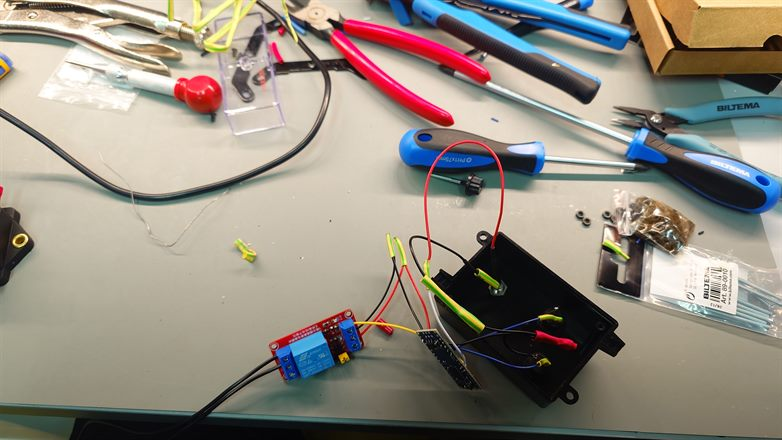
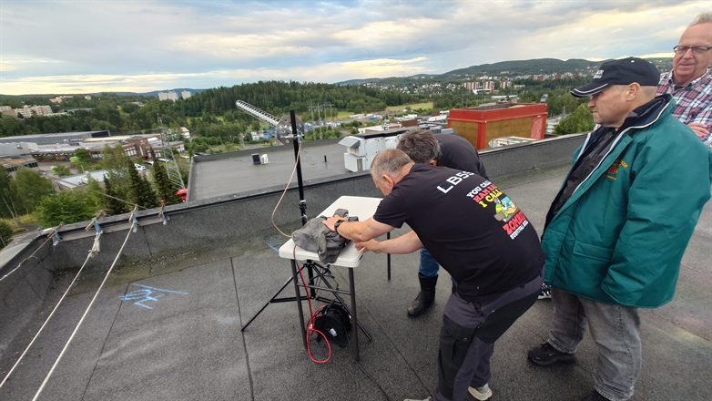
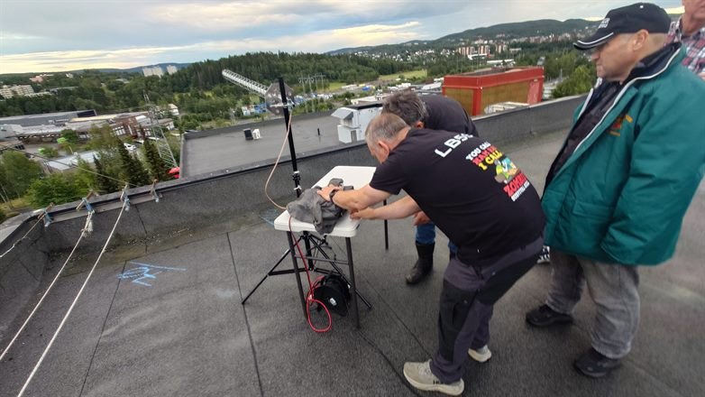
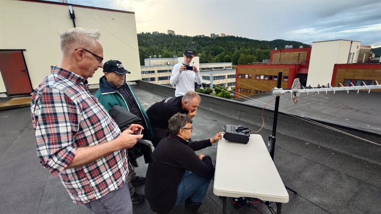
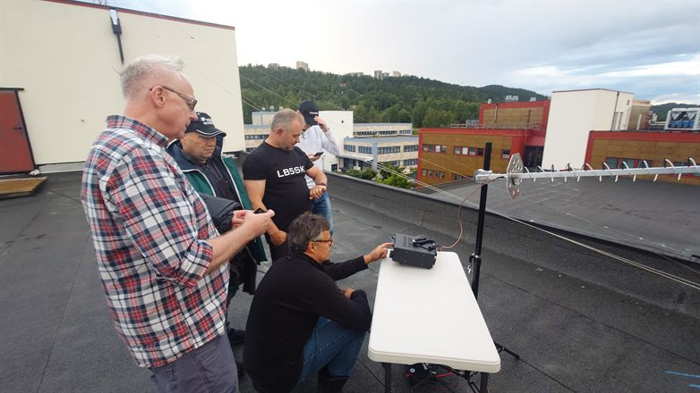
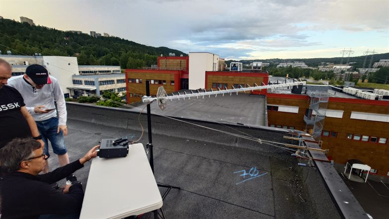
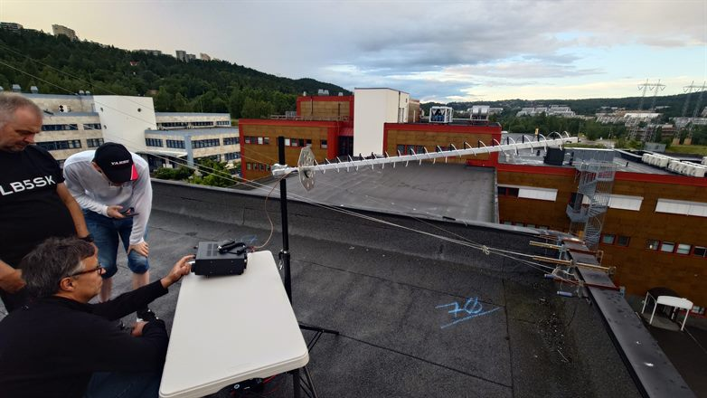
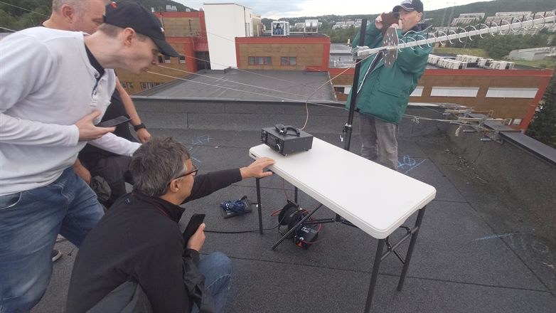
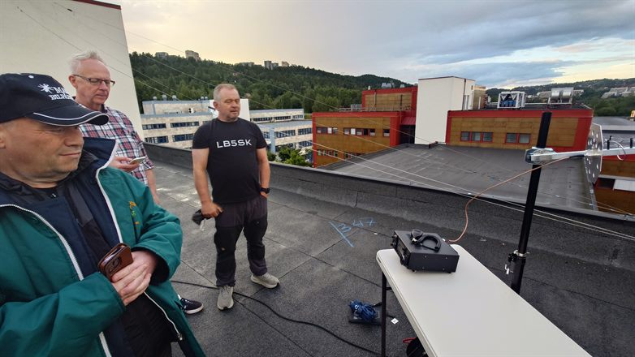
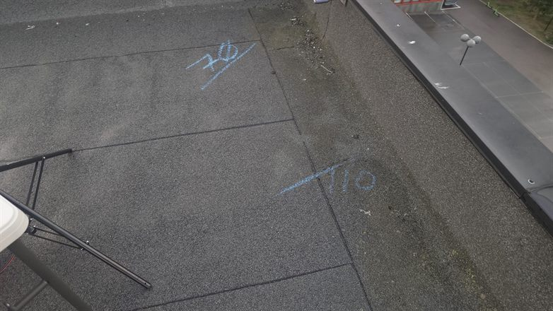
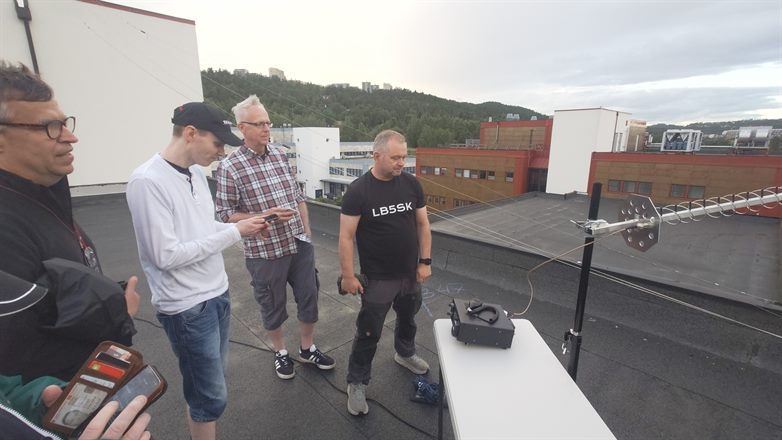
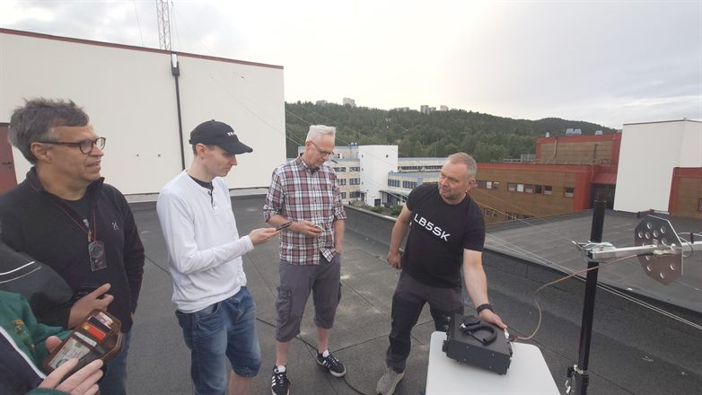
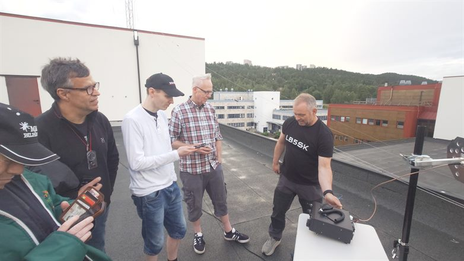
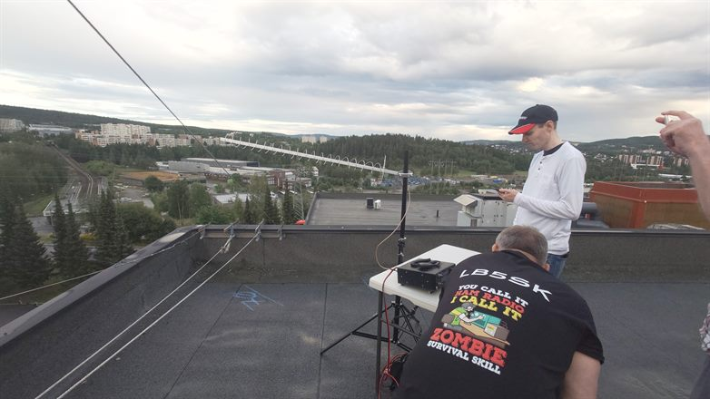
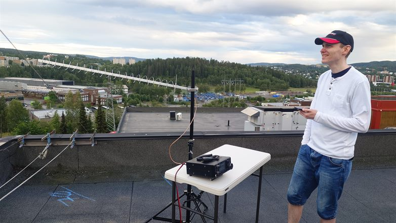
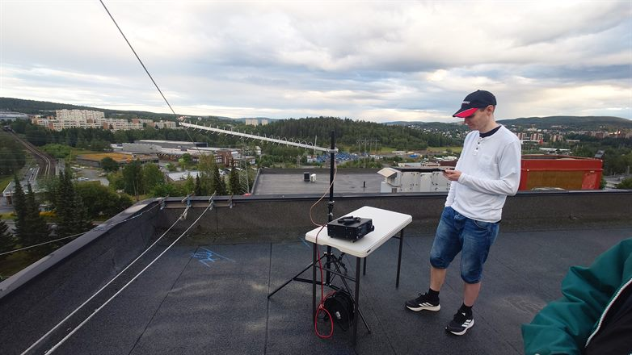
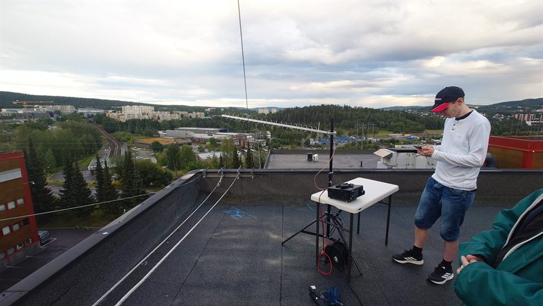
Second pass
Amplifier board · 10 July 2026
Photographs by LB6AJ. The assembly is described in Section 4.4.
Morning pass · 27 July 2026
Photographs by LB9BJ. The spacecraft capture sequence ran from 12:51:02 to 12:54:05 CEST; captures 1, 4 and 5 detected the command and launched DOOM.
Morning pass, second camera · 27 July 2026
Photographs by LA7IJ. The transmission ran to 12:58 CEST; the sequence from 12:57 onward was taken while the station was still on the air, and the 12:59 frames immediately after it stopped.
Evening pass, setup · 27 July 2026
Photographs by LA7IJ, 23:25–23:27 CEST — the station being made ready on the roof at Rommen, some five minutes before acquisition of signal at 23:32.
Evening pass · 27 July 2026
Photographs by LB9BJ. Acquisition 23:32, transmission 23:33–23:41, all with the live microphone.
Evening pass, from Nordland · 27 July 2026
Photograph by LB6AJ, taken during the evening transmission 912 km north of the station.
Evening pass, after loss of signal · 28 July 2026
Photograph by LA7IJ, sent at 00:05 on 28 July.
Revision history
Changes made to this document after its first issue. The technical content of version 1.0 — the measurements, the analysis and the conclusions — is unchanged; the revisions below concern presentation, accessibility and the record of published accounts.
Version 1.1 — 1 August 2026
Published accounts recorded
Section 2.7 now cites the three write-ups of the 27 July demonstration published at the end of July 2026, by Tanagra Space and by LA4O, together with a note that all three are by participants rather than independent press.
Chapter 10 opens with a new photograph, Figure 31: LB9BJ at the microphone on the roof during the evening transmission, taken by LA7IJ and first published in LA4O’s own announcement. The figures that followed it are renumbered accordingly. The same photograph is now the preview image used when a link to this report is shared, together with a title and summary, so that the report presents itself properly rather than as a bare address.
Page weight
The document is large — 38 figures, 130 photographic plates and 48 audio recordings — and the first issue asked a visitor to download all of it at once. It no longer does. Images below the cover load only as they are scrolled into view; the photographic plates are served as thumbnails, with the full-resolution file fetched only when a plate is opened; the largest figures are served at display resolution, again with the original behind the click; and the two downlinked gameplay animations are served as H.264 video instead of GIF, with the original GIFs retained and linked from their captions. The two postcards composited aboard the spacecraft, together over 2.7 MB of PNG, are served as WebP renderings with the downlinked PNG both opening on click and linked for download from the caption; the club badge on the cover became a 10 KB vector in place of a 73 KB raster shown at 98 px. The initial download fell from 29.1 MB to 50 KB, and browsing the whole report from 51.6 MB to about 19 MB. No image was replaced by a smaller one: every original remains published and reachable.
Plates at full resolution, without location data
The photographic plates had been published at about 1 400 px since the archive was first assembled. They are now published at the resolution they were taken at — 3 072 to 4 080 px — so that the record is usable for documentation and reproduction rather than only for reading on screen. The gallery still loads 600 px thumbnails, so the page costs no more to browse; the full file is fetched only when a plate is opened.
The camera originals carried GPS coordinates, which the earlier downscaled copies had lost when they were re-encoded. Publishing them unchanged would have put location data for 75 photographs on the web for the first time, so the GPS block was removed from every published JPEG before release. Nothing else was altered: the removal edits the EXIF in place without changing file length or a single byte of image data, and the capture timestamps — the source of the times quoted in the plate captions — are retained.
Reading on a telephone
Wide tables no longer push the page sideways; each now scrolls within its own box, with the same treatment applied to the log and code listings. The photograph viewer sizes itself to the visible area rather than the nominal viewport, so the caption is no longer hidden behind browser chrome; its controls sit clear of the picture instead of on top of it; captions scroll when long; and plates can be paged through by swiping.
Accessibility
Text contrast was raised to meet WCAG AA: the section kickers and chapter numbers from 2.85:1 to 5.89:1, and the figure credits from 4.31:1 to 5.71:1. Credits shown over the dark photograph viewer were lightened rather than darkened, reaching 10.7:1. Every image now declares its dimensions, so the page no longer shifts as it loads. The 48 audio download links, which all read simply “Download”, now name the file they fetch, qualified by pass where the morning and evening archives contain files of the same name. Heading levels were corrected so that no level is skipped.
Corrections
Three headings in Appendix D opened at one level and closed at another. The reference list cited the embedded audio by filenames that had not existed since the media was reorganised by provenance; it now cites the directories, which resolve. The document claimed thirty-six embedded recordings where there are forty-eight, and credited LB9BJ with “all 24 plates” of the 27 July sections, which the addition of LA7IJ’s photographs had made both wrong and no longer exhaustive.
Version 1.0 — 30 July 2026
First issue. Documents the complete LA4O contribution to the PRETTY DOOM experiment: origin, ground-station design, RF and DSP engineering, speech-recognition and command design, the 3 July instrumented listening test, and both successful passes of 27 July. Proof-read by LB9BJ on 29 July; his corrections to the account of the coaxial patch assembly and to the logged maximum elevation are incorporated in that issue.